mxmap.it · Osservatorio Nazionale Sovranità Digitale
EU Security Mail Map
Where Europe's police forces, intelligence services, interior and defence ministries, cybersecurity agencies and EU security institutions host their public email — and how many depend on US-based providers subject to the US CLOUD Act.
Country ranking
Share of each country's classified security bodies by mail jurisdiction. Countries with at least 5 classified bodies; Russia and Belarus are listed in the annex, outside the ranking.
Highest US exposure
- 1
 Malta100%7 classified
Malta100%7 classified - 2
 United Kingdom89%18 classified
United Kingdom89%18 classified - 3
 Iceland86%7 classified
Iceland86%7 classified - 4
 Albania78%9 classified
Albania78%9 classified - 5
 Norway75%12 classified
Norway75%12 classified - 6
 Belgium73%11 classified
Belgium73%11 classified - 7
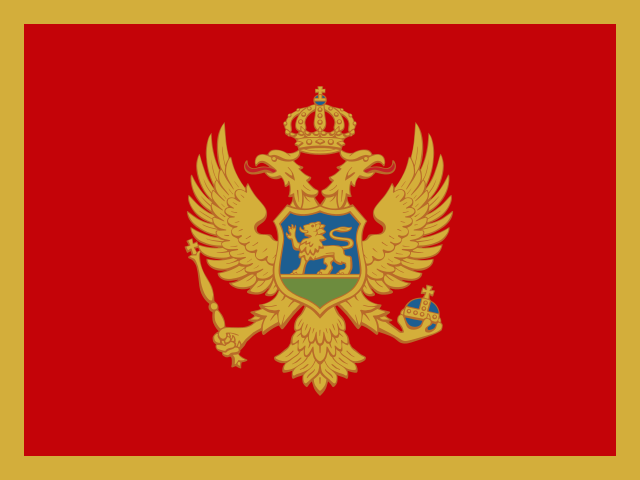
Montenegro67%6 classified - 8
 Ireland57%7 classified
Ireland57%7 classified - 9
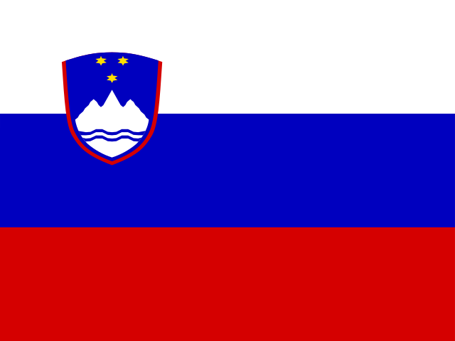
Slovenia50%8 classified - 10
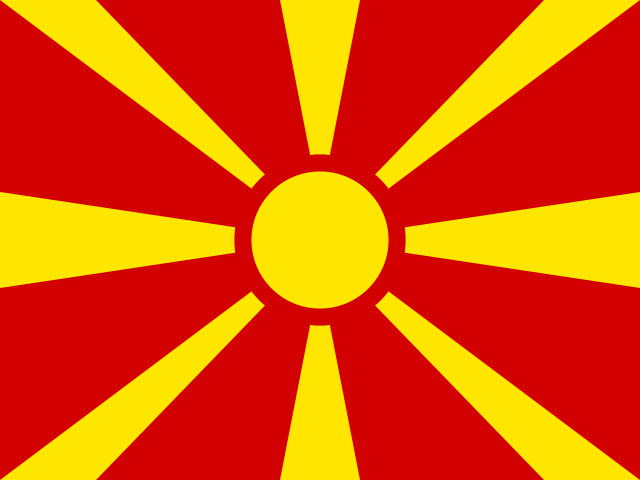
North Macedonia44%9 classified
Best positioned (national jurisdiction)
- 1
 Hungary100%14 classified
Hungary100%14 classified - 2
 Germany100%13 classified
Germany100%13 classified - 3
 Luxembourg100%13 classified
Luxembourg100%13 classified - 4
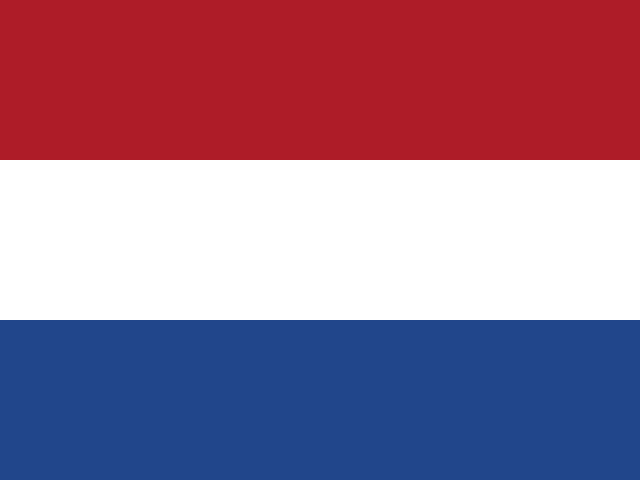
Netherlands100%12 classified - 5
 Austria100%10 classified
Austria100%10 classified - 6
 Latvia100%11 classified
Latvia100%11 classified - 7
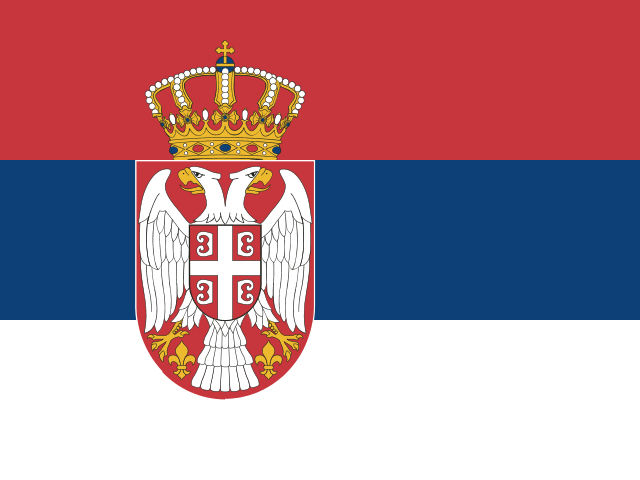
Serbia100%10 classified - 8
 Sweden100%11 classified
Sweden100%11 classified - 9
 Turkey100%11 classified
Turkey100%11 classified - 10
 Switzerland100%10 classified
Switzerland100%10 classified
Drill-down by sector
The same measurement, split by family of security body: each sector has its own country rankings and the list of its bodies whose mail runs on a US provider.
National police forces and gendarmeries. Countries ranked with at least 1 classified bodies in this sector.
Highest US exposure — Police
- 1Albania100%1 classified
- 2Belgium100%1 classified
- 3
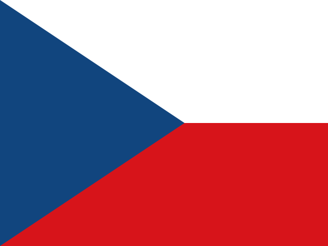
Czechia100%1 classified - 4Ireland100%1 classified
- 5Iceland100%1 classified
- 6Montenegro100%1 classified
- 7North Macedonia100%1 classified
- 8Malta100%1 classified
- 9Norway100%1 classified
- 10
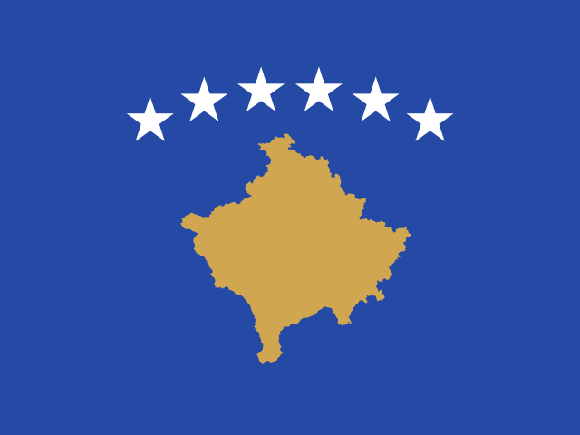
Kosovo100%1 classified
Best positioned — Police
- 1
 Portugal100%3 classified
Portugal100%3 classified - 2Austria100%2 classified
- 3
 Bosnia and Herzegovina100%2 classified
Bosnia and Herzegovina100%2 classified - 4
 Spain100%1 classified
Spain100%1 classified - 5
 France100%2 classified
France100%2 classified - 6
 Lithuania100%2 classified
Lithuania100%2 classified - 7Monaco100%2 classified
- 8
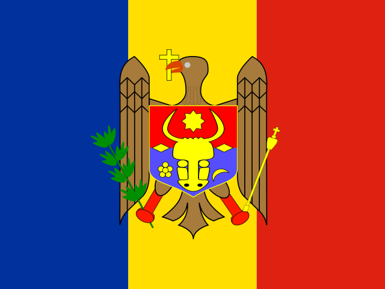
Moldova100%2 classified - 9Netherlands100%2 classified
- 10
 Romania100%2 classified
Romania100%2 classified
17 police bodies on a US provider
- Albanian State Police Albania · Microsoft 365 ·
asp.gov.al - Belgian Federal Police Belgium · Microsoft 365 ·
police.belgium.eu - Police of the Czech Republic Czechia · Microsoft 365 ·
pcr.cz 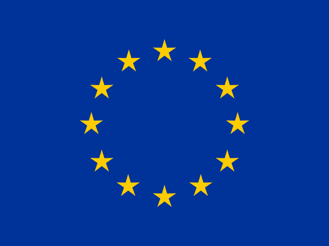
CEPOL European Union institutions · Microsoft 365 ·cepol.europa.eu- National Commissioner of the Icelandic Police Iceland · Microsoft 365 ·
logreglan.is - The Guardians of the Peace (national police) Ireland · Microsoft 365 ·
garda.ie  Carabinieri Corps Italy · Google Workspace ·
Carabinieri Corps Italy · Google Workspace · carabinieri.it- Penitentiary Police Italy · Microsoft 365 ·
giustizia.it - State Police Italy · Microsoft 365 ·
poliziadistato.it - Kosovo Police Kosovo · Microsoft 365 ·
kosovopolice.com - Malta Police Force Malta · Microsoft 365 ·
gov.mt - Police Administration of Montenegro Montenegro · Amazon (AWS) ·
up.gov.me - Public Security Bureau (National Police) North Macedonia · Microsoft 365 ·
moi.gov.mk - Norwegian Police Service / National Police Directorate Norway · Microsoft 365 ·
politiet.no - Metropolitan Police Service United Kingdom · Microsoft 365 ·
met.police.uk - National Crime Agency United Kingdom · Microsoft 365 ·
nca.gov.uk - Police Service of Scotland United Kingdom · Microsoft 365 ·
scotland.police.uk
Defence ministries, armed-forces branches and general staffs. Countries ranked with at least 1 classified bodies in this sector.
Highest US exposure — Defence
10 defence bodies on a US provider
- Belgian Ministry of Defence Belgium · Microsoft 365 ·
mil.be  Danish Home Guard Denmark · Microsoft 365 ·
Danish Home Guard Denmark · Microsoft 365 · hjv.dk- European Commission DG DEFIS European Union institutions · Microsoft 365 ·
ec.europa.eu - European Defence Agency European Union institutions · Microsoft 365 ·
eda.europa.eu  Ministry of Defence Finland · Microsoft 365 ·
Ministry of Defence Finland · Microsoft 365 · gov.fi- Armed Forces General Staff Portugal · Microsoft 365 ·
emgfa.pt - Portuguese Air Force Portugal · Microsoft 365 ·
emfa.gov.pt - Portuguese Navy Portugal · Microsoft 365 ·
marinha.pt - Ministry of Defence of Ukraine Ukraine · Microsoft 365 ·
mod.gov.ua - Ministry of Defence United Kingdom · Microsoft 365 ·
mod.gov.uk
Domestic, foreign, military and signals intelligence. Countries ranked with at least 1 classified bodies in this sector.
Highest US exposure — Intelligence
17 intelligence bodies on a US provider
- General Intelligence and Security Service Belgium · Microsoft 365 ·
mil.be - Military Intelligence Czechia · Microsoft 365 ·
vz.gov.cz - Office for Foreign Relations and Information Czechia · Google Workspace ·
uzsi.cz - Danish Defence Intelligence Service Denmark · Microsoft 365 ·
fe-ddis.dk - Danish Security and Intelligence Service Denmark · Google Workspace ·
pet.dk - EU Satellite Centre European Union institutions · Microsoft 365 ·
satcen.europa.eu - National Security Unit (analysis/intelligence unit of the National Police Commissioner) Iceland · Microsoft 365 ·
logreglan.is - Kosovo Intelligence Agency Kosovo · Self-hosted ·
aki-rks.org - State Security Department Lithuania · Microsoft 365 ·
vsd.lt - Malta Security Service Malta · Microsoft 365 ·
gov.mt - Norwegian Intelligence Service Norway · Microsoft 365 ·
mil.no - Intelligence System of the Portuguese Republic (Secretary-General's Office) Portugal · Microsoft 365 ·
sirp.gov.pt - Slovenian Intelligence and Security Agency Slovenia · Microsoft 365 ·
gov.si - Defence Intelligence United Kingdom · Microsoft 365 ·
mod.gov.uk - Government Communications Headquarters United Kingdom · Microsoft 365 ·
gchq.gov.uk - Secret Intelligence Service United Kingdom · Microsoft 365 ·
sis.gov.uk - Security Service United Kingdom · Microsoft 365 ·
mi5.gov.uk
Border guards, coast guards and maritime authorities. Countries ranked with at least 1 classified bodies in this sector.
Highest US exposure — Border & maritime
- 1United Kingdom100%2 classified
- 2Malta100%2 classified
- 3Albania100%1 classified
- 4Belgium100%1 classified
- 5Spain100%1 classified
- 6Croatia100%1 classified
- 7Ireland100%1 classified
- 8Iceland100%1 classified
- 9Montenegro100%1 classified
- 10North Macedonia100%1 classified
Best positioned — Border & maritime
- 1
 Bulgaria100%2 classified
Bulgaria100%2 classified - 2
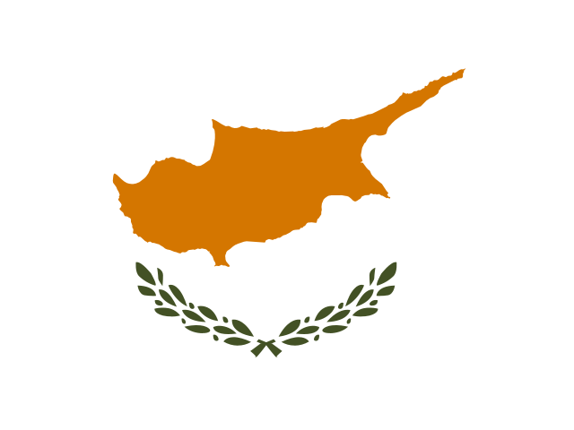
Cyprus100%2 classified - 3Germany100%2 classified
- 4Moldova100%2 classified
- 5Netherlands100%2 classified
- 6Ukraine100%2 classified
- 7Bosnia and Herzegovina100%1 classified
- 8Switzerland100%1 classified
- 9Finland100%1 classified
- 10France100%1 classified
16 border & maritime bodies on a US provider
- Border and Migration Police Department Albania · Microsoft 365 ·
asp.gov.al - General Administration of Customs and Excise Belgium · Microsoft 365 ·
minfin.fed.be - Customs Administration Croatia · Microsoft 365 ·
carina.hr - Frontex European Union institutions · Microsoft 365 ·
frontex.europa.eu - Icelandic Coast Guard Iceland · Microsoft 365 ·
lhg.is - Irish Coast Guard Ireland · Microsoft 365 ·
irishcoastguard.ie - Armed Forces of Malta Malta · Microsoft 365 ·
gov.mt - Transport Malta (maritime authority, port facility security) Malta · Microsoft 365 ·
transport.gov.mt - Border Police Sector Montenegro · Amazon (AWS) ·
up.gov.me - Border Affairs and Migration Department (Border Police), MVR North Macedonia · Microsoft 365 ·
moi.gov.mk - Norwegian Coastal Administration Norway · Microsoft 365 ·
kystverket.no - National Maritime Authority Portugal · Microsoft 365 ·
amn.pt - Romanian Naval Authority Romania · Microsoft 365 ·
rna.ro - Spanish Maritime Safety and Rescue Agency Spain · Microsoft 365 ·
sasemar.es - Border Force United Kingdom · Amazon (AWS) ·
homeoffice.gov.uk - Maritime and Coastguard Agency (HM Coastguard) United Kingdom · Microsoft 365 ·
mcga.gov.uk
Interior ministries, prosecutors and judicial security bodies. Countries ranked with at least 1 classified bodies in this sector.
Highest US exposure — Interior & justice
- 1Albania100%1 classified
- 2Belgium100%1 classified
- 3Finland100%1 classified
- 4United Kingdom100%1 classified
- 5
 Greece100%1 classified
Greece100%1 classified - 6Iceland100%1 classified
- 7Italy100%1 classified
- 8Lithuania100%1 classified
- 9Montenegro100%1 classified
- 10North Macedonia100%1 classified
Best positioned — Interior & justice
- 1Bosnia and Herzegovina100%3 classified
- 2Austria100%1 classified
- 3Bulgaria100%1 classified
- 4Switzerland100%1 classified
- 5Cyprus100%1 classified
- 6Czechia100%1 classified
- 7Germany100%1 classified
- 8Denmark100%1 classified
- 9
 Estonia100%1 classified
Estonia100%1 classified - 10France100%1 classified
16 interior & justice bodies on a US provider
- Ministry of Internal Affairs Albania · Microsoft 365 ·
mb.gov.al - Federal Public Service Interior Belgium · Microsoft 365 ·
ibz.be - European Commission DG HOME European Union institutions · Microsoft 365 ·
ec.europa.eu - European Public Prosecutor's Office European Union institutions · Microsoft 365 ·
eppo.europa.eu - Ministry of the Interior Finland · Microsoft 365 ·
gov.fi - Ministry of the Interior Greece · Microsoft 365 ·
ypes.gr - Ministry of Justice (interior-ministry equivalent: police, border, civil protection) Iceland · Microsoft 365 ·
dmr.is - Ministry of the Interior Italy · Microsoft 365 ·
interno.it - Ministry of the Interior of the Republic of Lithuania Lithuania · Microsoft 365 ·
vrm.lt - Ministry for Home Affairs, Security and Employment Malta · Microsoft 365 ·
gov.mt - Ministry of the Interior of Montenegro Montenegro · Amazon (AWS) ·
mup.gov.me - Ministry of Internal Affairs of the Republic of North Macedonia North Macedonia · Microsoft 365 ·
moi.gov.mk - Ministry of Internal Administration Portugal · Microsoft 365 ·
mai.gov.pt - Ministry of the Interior Slovenia · Microsoft 365 ·
gov.si - Ministry of Internal Affairs of Ukraine Ukraine · Microsoft 365 ·
mvs.gov.ua - Home Office United Kingdom · Amazon (AWS) ·
homeoffice.gov.uk
National cyber agencies and CERTs/CSIRTs. Countries ranked with at least 1 classified bodies in this sector.
Highest US exposure — Cybersecurity
Best positioned — Cybersecurity
- 1Turkey100%3 classified
- 2Austria100%2 classified
- 3Belgium100%2 classified
- 4Spain100%2 classified
- 5Georgia100%2 classified
- 6Croatia100%2 classified
- 7
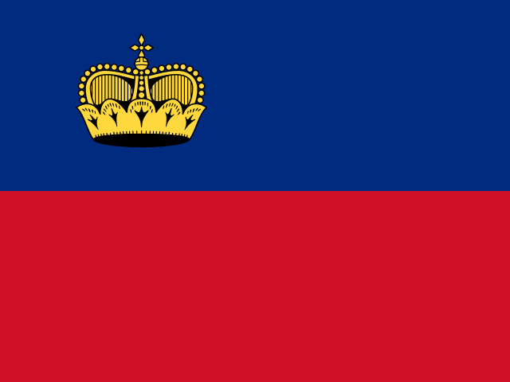
Liechtenstein100%2 classified - 8Luxembourg100%2 classified
- 9
 Slovakia100%2 classified
Slovakia100%2 classified - 10Switzerland100%1 classified
26 cybersecurity bodies on a US provider
- National Cyber Security Authority Albania · Microsoft 365 ·
aksk.gov.al - CERT Bulgaria (National CSIRT) Bulgaria · Microsoft 365 ·
govcert.bg - Ministry of e-Government Bulgaria · Microsoft 365 ·
egov.government.bg - Digital Security Authority Cyprus · Microsoft 365 ·
dsa.ee.cy - National CSIRT of Cyprus Cyprus · Microsoft 365 ·
csirt.cy - National Cyber and Information Security Agency Czechia · Microsoft 365 ·
nukib.gov.cz - Danish Agency for Societal Security Denmark · Google Workspace ·
samsik.dk - Estonian Information System Authority Estonia · Microsoft 365 ·
ria.ee - European Cybersecurity Competence Centre European Union institutions · Microsoft 365 ·
eccc.europa.eu - National CSIRT of Greece Greece · Microsoft 365 ·
cyber.gov.gr - National Cybersecurity Authority Greece · Microsoft 365 ·
cyber.gov.gr - National Computer Emergency Response Team of Iceland Iceland · Microsoft 365 ·
cert.is - Italian national CSIRT Italy · Microsoft 365 ·
acn.gov.it - National Cybersecurity Agency Italy · Microsoft 365 ·
acn.gov.it - National Cyber Security Unit (KOS-CERT) Kosovo · Google Workspace ·
kos-cert.org - Regulatory Authority of Electronic and Postal Communications Kosovo · Google Workspace ·
arkep-rks.org - National Cyber Security Centre under the Ministry of National Defence Lithuania · Microsoft 365 ·
nksc.lt - Critical Infrastructure Protection Directorate (incl. CSIRTMalta, national CSIRT) Malta · Microsoft 365 ·
gov.mt - Agency for Cyber Security (National Cybersecurity Agency of Moldova) Moldova · Google Workspace ·
asc.gov.md - National Computer Incident Response Team of Montenegro Montenegro · Amazon (AWS) ·
cirt.me - National Centre for Computer Incident Response (MKD-CIRT) North Macedonia · Microsoft 365 ·
mkd-cirt.mk - NASK - National Research Institute Poland · Microsoft 365 ·
nask.pl - National Cyber Security Directorate Romania · Microsoft 365 ·
dnsc.ro - Government Information Security Office of the Republic of Slovenia Slovenia · Microsoft 365 ·
gov.si - Computer Emergency Response Team of Ukraine Ukraine · Microsoft 365 ·
cert.gov.ua - National Cyber Security Centre United Kingdom · Microsoft 365 ·
ncsc.gov.uk
Crisis management, nuclear regulators, classified-information authorities, customs. Countries ranked with at least 1 classified bodies in this sector.
Highest US exposure — Civil protection & other
Best positioned — Civil protection & other
- 1Luxembourg100%6 classified
- 2Greece100%4 classified
- 3Germany100%4 classified
- 4Estonia100%4 classified
- 5Hungary100%4 classified
- 6Netherlands100%4 classified
- 7Bulgaria100%2 classified
- 8Switzerland100%3 classified
- 9Czechia100%3 classified
- 10Spain100%2 classified
31 civil protection & other bodies on a US provider
- National Authority for Classified Information Security (National Security Authority) Albania · Microsoft 365 ·
nsa.gov.al - National Civil Protection Agency Albania · Microsoft 365 ·
akmc.gov.al - Republican Guard of Albania Albania · Microsoft 365 ·
garda.gov.al - Federal Agency for Nuclear Control Belgium · Microsoft 365 ·
fanc.fgov.be - National Crisis Centre Belgium · Microsoft 365 ·
nccn.fgov.be - National Security Authority Belgium · Microsoft 365 ·
nvo-ans.be - EU Drugs Agency (ex-EMCDDA) European Union institutions · Microsoft 365 ·
euda.europa.eu - EU Institute for Security Studies European Union institutions · Microsoft 365 ·
iss.europa.eu - European Anti-Fraud Office European Union institutions · Microsoft 365 ·
ec.europa.eu - European Union Aviation Safety Agency European Union institutions · Microsoft 365 ·
easa.europa.eu - Radiation and Nuclear Safety Authority Finland · Microsoft 365 ·
stuk.fi - Nuclear Safety and Radiation Protection Authority France · Microsoft 365 ·
asnr.fr - Icelandic Radiation Safety Authority Iceland · Microsoft 365 ·
gr.is - Environmental Protection Agency (radiological protection regulator) Ireland · Microsoft 365 ·
epa.ie - Irish Defence Forces (incl. Directorate of Military Intelligence J2) Ireland · Microsoft 365 ·
military.ie - Civil Protection Department Italy · Microsoft 365 ·
protezionecivile.it - National Inspectorate for Nuclear Safety and Radiation Protection Italy · Google Workspace ·
isinucleare.it - Civil Protection Department Malta · Microsoft 365 ·
gov.mt - Joint Rescue Coordination Centre Norway · Microsoft 365 ·
hovedredningssentralen.no - Norwegian Armed Forces Norway · Microsoft 365 ·
mil.no - Norwegian Defence Estates Agency Norway · Microsoft 365 ·
forsvarsbygg.no - Norwegian Defence Materiel Agency Norway · Microsoft 365 ·
fma.no - Norwegian Directorate for Civil Protection Norway · Microsoft 365 ·
dsb.no - Norwegian Radiation and Nuclear Safety Authority Norway · Microsoft 365 ·
dsa.no - State Fire Service Poland · Microsoft 365 ·
kgpsp.gov.pl - Government Office for the Protection of Classified Information (National Security Authority) Slovenia · Microsoft 365 ·
gov.si - State Emergency Service of Ukraine Ukraine · Google Workspace ·
dsns.gov.ua - Atomic Weapons Establishment United Kingdom · Microsoft 365 ·
awe.co.uk - Civil Nuclear Constabulary United Kingdom · Microsoft 365 ·
cnc.police.uk - Office for Nuclear Regulation United Kingdom · Microsoft 365 ·
onr.gov.uk - UK Hydrographic Office United Kingdom · Microsoft 365 ·
ukho.gov.uk
By type of body
| Type | Bodies | National | US | Other European | Unknown | US share of classified |
|---|---|---|---|---|---|---|
| Armed forces / general staff | 29 | 23 | 4 | 0 | 2 | 15% |
| Border / coast guard | 48 | 30 | 16 | 1 | 1 | 34% |
| Cybersecurity | 69 | 42 | 26 | 0 | 1 | 38% |
| Defence ministry | 45 | 37 | 6 | 0 | 2 | 14% |
| Gendarmerie | 16 | 14 | 1 | 0 | 1 | 7% |
| Intelligence | 96 | 72 | 17 | 0 | 7 | 19% |
| Interior ministry | 51 | 31 | 15 | 1 | 4 | 32% |
| Other national security | 128 | 84 | 32 | 1 | 11 | 27% |
| Police | 57 | 38 | 16 | 0 | 3 | 30% |
Directory by country
European Union institutions EU institutionsUS exposure 67% · national 33% · 21 bodies
| Body | Type | Website | Mail domain · how established | Mail provider | Jurisdiction |
|---|---|---|---|---|---|
| European Maritime Safety Agency (EMSA) European Maritime Safety Agency | Border / coast guard | www.emsa.europa.eu | emsa.europa.euofficial site | Self-hosted | National |
| Frontex (Frontex) European Border and Coast Guard Agency | Border / coast guard | www.frontex.europa.eu | frontex.europa.euofficial site | Microsoft 365 | US provider (CLOUD Act) |
| CERT-EU (CERT-EU) Cybersecurity Service for the Union institutions, bodies, offices and agencies | Cybersecurity | cert.europa.eu | cert.europa.euofficial site | Self-hosted | National |
| ENISA (ENISA) European Union Agency for Cybersecurity | Cybersecurity | www.enisa.europa.eu | enisa.europa.euofficial site | Self-hosted | National |
| European Cybersecurity Competence Centre (ECCC) European Cybersecurity Industrial, Technology and Research Competence Centre | Cybersecurity | cybersecurity-centre.europa.eu | eccc.europa.euofficial site | Microsoft 365 | US provider (CLOUD Act) |
| European Commission DG DEFIS (DG DEFIS) European Commission — Directorate-General for Defence Industry and Space | Defence ministry | defence-industry-space.ec.europa.eu | ec.europa.euofficial site | Microsoft 365 | US provider (CLOUD Act) |
| European Defence Agency (EDA) European Defence Agency | Defence ministry | www.eda.europa.eu | eda.europa.euofficial site | Microsoft 365 | US provider (CLOUD Act) |
| EU Satellite Centre (SatCen) European Union Satellite Centre | Intelligence | www.satcen.europa.eu | satcen.europa.euofficial document | Microsoft 365 | US provider (CLOUD Act) |
| European External Action Service (EEAS) European External Action Service | Intelligence | www.eeas.europa.eu | eeas.europa.euofficial site | Not determinable | Unknown |
| European Commission DG HOME (DG HOME) European Commission — Directorate-General for Migration and Home Affairs | Interior ministry | home-affairs.ec.europa.eu | ec.europa.euofficial site | Microsoft 365 | US provider (CLOUD Act) |
| Council of the EU — General Secretariat (GSC) General Secretariat of the Council of the European Union | Other national security | www.consilium.europa.eu | consilium.europa.euofficial site | Self-hosted | National |
| EU Agency for the Space Programme (EUSPA) European Union Agency for the Space Programme | Other national security | www.euspa.europa.eu | euspa.europa.euofficial site | Not determinable | Unknown |
| EU Drugs Agency (ex-EMCDDA) (EUDA) European Union Drugs Agency | Other national security | www.euda.europa.eu | euda.europa.euAI cross-check | Microsoft 365 | US provider (CLOUD Act) |
| EU Institute for Security Studies (EUISS) European Union Institute for Security Studies | Other national security | www.iss.europa.eu | iss.europa.euofficial site | Microsoft 365 | US provider (CLOUD Act) |
| Eurojust (Eurojust) European Union Agency for Criminal Justice Cooperation | Other national security | www.eurojust.europa.eu | eurojust.europa.euofficial site | Self-hosted | National |
| European Anti-Fraud Office (OLAF) European Anti-Fraud Office | Other national security | anti-fraud.ec.europa.eu | ec.europa.euofficial site | Microsoft 365 | US provider (CLOUD Act) |
| European Public Prosecutor's Office (EPPO) European Public Prosecutor's Office | Other national security | www.eppo.europa.eu | eppo.europa.euofficial site | Microsoft 365 | US provider (CLOUD Act) |
| European Union Aviation Safety Agency (EASA) European Union Aviation Safety Agency | Other national security | www.easa.europa.eu | easa.europa.euofficial site | Microsoft 365 | US provider (CLOUD Act) |
| eu-LISA (eu-LISA) European Union Agency for the Operational Management of Large-Scale IT Systems in the Area of Freedom, Security and Justice | Other national security | www.eulisa.europa.eu | eulisa.europa.euofficial document | National ISP | Unknown |
| CEPOL (CEPOL) European Union Agency for Law Enforcement Training | Police | www.cepol.europa.eu | cepol.europa.euofficial document | Microsoft 365 | US provider (CLOUD Act) |
| Europol (Europol) European Union Agency for Law Enforcement Cooperation | Police | www.europol.europa.eu | europol.europa.euofficial site | Self-hosted | National |
Albania Candidate / neighbourUS exposure 78% · national 22% · 9 bodies
| Body | Type | Website | Mail domain · how established | Mail provider | Jurisdiction |
|---|---|---|---|---|---|
| Border and Migration Police Department Departamenti per Kufirin dhe Migracionin (Policia Kufitare dhe e Migracionit) | Border / coast guard | www.asp.gov.al | asp.gov.alofficial site | Microsoft 365 | US provider (CLOUD Act) |
| National Cyber Security Authority (AKSK) Autoriteti Kombetar per Sigurine Kibernetike | Cybersecurity | aksk.gov.al | aksk.gov.alofficial site | Microsoft 365 | US provider (CLOUD Act) |
| Ministry of Defence (MM) Ministria e Mbrojtjes | Defence ministry | www.mod.gov.al | mod.gov.alofficial document | Self-hosted | National |
| State Intelligence Service (SHISH) Sherbimi Informativ i Shtetit | Intelligence | shish.gov.al | shish.gov.alofficial site | Self-hosted | National |
| Ministry of Internal Affairs (MB) Ministria e Puneve te Brendshme | Interior ministry | mb.gov.al | mb.gov.alAI cross-check | Microsoft 365 | US provider (CLOUD Act) |
| National Authority for Classified Information Security (National Security Authority) (AKSIK) Autoriteti Kombetar per Sigurine e Informacionit te Klasifikuar (ish-DSIK) | Other national security | nsa.gov.al | nsa.gov.alofficial site | Microsoft 365 | US provider (CLOUD Act) |
| National Civil Protection Agency (AKMC) Agjencia Kombëtare e Mbrojtjes Civile | Other national security | akmc.gov.al | akmc.gov.alofficial document | Microsoft 365 | US provider (CLOUD Act) |
| Republican Guard of Albania Garda e Republikes | Other national security | www.garda.gov.al | garda.gov.alofficial document | Microsoft 365 | US provider (CLOUD Act) |
| Albanian State Police (ASP) Policia e Shtetit | Police | www.asp.gov.al | asp.gov.alofficial site | Microsoft 365 | US provider (CLOUD Act) |
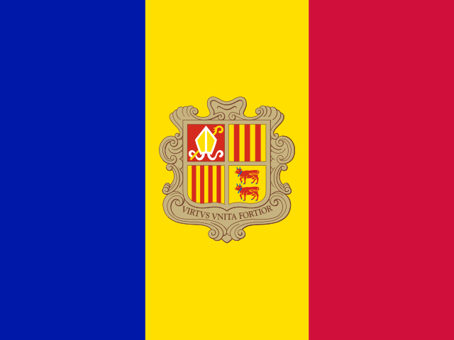
Andorra MicrostateUS exposure 0% · national 0% · 5 bodies| Body | Type | Website | Mail domain · how established | Mail provider | Jurisdiction |
|---|---|---|---|---|---|
| Customs Department Departament de Duana | Border / coast guard | www.duana.ad | govern.adinferred from website | National ISP | Other European |
| National Cybersecurity Agency of Andorra (ANC-AD) Agència Nacional de Ciberseguretat d'Andorra | Cybersecurity | www.ciberseguretat.ad | ciberseguretat.adinferred from website | Not determinable | Unknown |
| Ministry of Justice and Interior (MJI) Ministeri de Justícia i Interior | Interior ministry | www.govern.ad | govern.adofficial site | National ISP | Other European |
| Andorra Fire Brigade Cos de Bombers | Other national security | www.bombers.ad | bombers.adinferred from website | Not determinable | Unknown |
| Police Corps of Andorra Cos de Policia d'Andorra | Police | www.policia.ad | policia.adofficial document | Not determinable | Unknown |
Austria EU member stateUS exposure 0% · national 100% · 11 bodies
| Body | Type | Website | Mail domain · how established | Mail provider | Jurisdiction |
|---|---|---|---|---|---|
| CERT.at — national CERT of Austria (CERT.at) Computer Emergency Response Team Austria | Cybersecurity | www.cert.at | cert.atofficial site | Self-hosted | National |
| GovCERT Austria (GovCERT) GovCERT Austria | Cybersecurity | www.govcert.gv.at | govcert.gv.atofficial site | Self-hosted | National |
| Federal Ministry of Defence (BMLV) Bundesministerium für Landesverteidigung | Defence ministry | www.bundesheer.at | bmlv.gv.atofficial document | National ISP | National |
| Army Intelligence Office (HNaA) Heeresnachrichtenamt | Intelligence | www.bundesheer.at | bmlv.gv.atAI cross-check | National ISP | National |
| Counterintelligence Office (AbwA) Abwehramt | Intelligence | www.bundesheer.at | bmlv.gv.atinferred from website | National ISP | National |
| Directorate State Protection and Intelligence Service (DSN) Direktion Staatsschutz und Nachrichtendienst | Intelligence | www.dsn.gv.at | dsn.gv.atAI cross-check | National ISP | National |
| Federal Ministry of the Interior (BMI) Bundesministerium für Inneres | Interior ministry | www.bmi.gv.at | bmi.gv.atofficial site | Self-hosted | National |
| Federal Bureau of Anti-Corruption (BAK) Bundesamt zur Korruptionsprävention und Korruptionsbekämpfung | Other national security | www.bak.gv.at | bak.gv.atofficial site | Self-hosted | National |
| Federal radiation protection / nuclear supervisory authority (BMLUK Dept. V/8) (BMLUK V/8) BMLUK Abteilung V/8 Strahlenschutz (Aufsichts- und Bewilligungsbehörde) | Other national security | www.bmluk.gv.at/themen/klima-und-umwelt/strahlenschutz.html | bmluk.gv.atofficial site | Not determinable | Unknown |
| Criminal Intelligence Service Austria (BK) Bundeskriminalamt | Police | www.bundeskriminalamt.at | bmi.gv.atofficial site | Self-hosted | National |
| Federal Police (Provincial Police Directorates) Bundespolizei (Landespolizeidirektionen) | Police | www.polizei.gv.at | polizei.gv.atofficial document | Self-hosted | National |
Belgium EU member stateUS exposure 73% · national 27% · 12 bodies
| Body | Type | Website | Mail domain · how established | Mail provider | Jurisdiction |
|---|---|---|---|---|---|
| General Administration of Customs and Excise (AGD&A) Algemene Administratie van de Douane en Accijnzen / Administration générale des Douanes et Accises | Border / coast guard | finance.belgium.be/en/customs_excises | minfin.fed.beofficial site | Microsoft 365 | US provider (CLOUD Act) |
| Belgian national CERT (CERT.be) (CERT.be) CERT.be | Cybersecurity | cert.be | cert.beofficial site | Self-hosted | National |
| Centre for Cybersecurity Belgium (CCB) Centre pour la Cybersécurité Belgique / Centrum voor Cybersecurity België | Cybersecurity | ccb.belgium.be | ccb.belgium.beofficial site | Self-hosted | National |
| Belgian Ministry of Defence Ministerie van Defensie / Ministère de la Défense (La Défense belge) | Defence ministry | www.mil.be | mil.beAI cross-check | Microsoft 365 | US provider (CLOUD Act) |
| General Intelligence and Security Service (ADIV/SGRS) Algemene Dienst Inlichting en Veiligheid / Service Général du Renseignement et de la Sécurité | Intelligence | www.mil.be | mil.beAI cross-check | Microsoft 365 | US provider (CLOUD Act) |
| State Security Service (VSSE) Veiligheid van de Staat / Sûreté de l'État | Intelligence | www.vsse.be | vsse.beofficial site | Self-hosted | National |
| Federal Public Service Interior (IBZ) Service public fédéral Intérieur / Federale Overheidsdienst Binnenlandse Zaken | Interior ministry | www.ibz.be | ibz.beinferred from website | Microsoft 365 | US provider (CLOUD Act) |
| Coordination Unit for Threat Analysis (OCAD/OCAM) Orgaan voor de Coördinatie van de Analyse van de Dreiging / Organe de Coordination pour l'Analyse de la Menace | Other national security | ocad.belgium.be | ocad.belgium.beinferred from website | Not determinable | Unknown |
| Federal Agency for Nuclear Control (FANC/AFCN) Agence fédérale de Contrôle nucléaire / Federaal Agentschap voor Nucleaire Controle | Other national security | fanc.fgov.be | fanc.fgov.beofficial document | Microsoft 365 | US provider (CLOUD Act) |
| National Crisis Centre (NCCN) Nationaal Crisiscentrum / Centre de crise national | Other national security | crisiscentrum.be | nccn.fgov.beofficial site | Microsoft 365 | US provider (CLOUD Act) |
| National Security Authority (NVO-ANS) Nationale Veiligheidsoverheid / Autorité nationale de Sécurité | Other national security | www.nvoans.be | nvo-ans.beofficial document | Microsoft 365 | US provider (CLOUD Act) |
| Belgian Federal Police Police Fédérale / Federale Politie | Police | www.police.be | police.belgium.euofficial site | Microsoft 365 | US provider (CLOUD Act) |
Bosnia and Herzegovina Candidate / neighbourUS exposure 0% · national 100% · 9 bodies
| Body | Type | Website | Mail domain · how established | Mail provider | Jurisdiction |
|---|---|---|---|---|---|
| Border Police of Bosnia and Herzegovina (GP BiH) Granična policija Bosne i Hercegovine | Border / coast guard | www.granpol.gov.ba | granpol.gov.baAI cross-check | National ISP | National |
| Ministry of Defence of Bosnia and Herzegovina (MO BiH) Ministarstvo odbrane Bosne i Hercegovine | Defence ministry | www.mod.gov.ba | mod.gov.baofficial site | Self-hosted | National |
| Intelligence-Security Agency of Bosnia and Herzegovina (OSA-OBA) Obavještajno-sigurnosna agencija Bosne i Hercegovine | Intelligence | www.osa-oba.gov.ba | osa-oba.gov.baofficial site | National ISP | National |
| Federal Ministry of Interior (Federation of Bosnia and Herzegovina) (FMUP) Federalno ministarstvo unutrašnjih poslova | Interior ministry | fmup.gov.ba | fmup.gov.baofficial site | National ISP | National |
| Ministry of Interior of Republika Srpska (MUP RS) Ministarstvo unutrašnjih poslova Republike Srpske | Interior ministry | mup.vladars.net | mup.vladars.netAI cross-check | Self-hosted | National |
| Ministry of Security of Bosnia and Herzegovina (MSB) Ministarstvo sigurnosti Bosne i Hercegovine | Interior ministry | www.msb.gov.ba | msb.gov.baofficial site | National ISP | National |
| Federal Civil Protection Administration (FBiH) (FUCZ) Federalna uprava civilne zaštite | Other national security | fucz.gov.ba | fucz.gov.baofficial site | National ISP | National |
| Directorate for Coordination of Police Bodies of Bosnia and Herzegovina (DKPT) Direkcija za koordinaciju policijskih tijela Bosne i Hercegovine | Police | dkpt.gov.ba | dkpt.gov.baofficial site | National ISP | National |
| State Investigation and Protection Agency (SIPA) Državna agencija za istrage i zaštitu | Police | www.sipa.gov.ba | sipa.gov.baofficial site | Self-hosted | National |
Bulgaria EU member stateUS exposure 17% · national 83% · 13 bodies
| Body | Type | Website | Mail domain · how established | Mail provider | Jurisdiction |
|---|---|---|---|---|---|
| Bulgarian Maritime Administration (IAMA) Изпълнителна агенция „Морска администрация“ | Border / coast guard | marad.bg | marad.bgofficial site | Self-hosted | National |
| General Directorate Border Police (GDGP) Главна дирекция „Гранична полиция“ | Border / coast guard | www.mvr.bg/gdgp | mvr.bgofficial document | Self-hosted | National |
| CERT Bulgaria (National CSIRT) (CERT-BG) Национален екип за реагиране при инциденти с компютърната сигурност (CERT България) | Cybersecurity | www.govcert.bg | govcert.bgofficial site | Microsoft 365 | US provider (CLOUD Act) |
| Ministry of e-Government (MEU) Министерство на електронното управление | Cybersecurity | egov.government.bg | egov.government.bgofficial site | Microsoft 365 | US provider (CLOUD Act) |
| Ministry of Defence (MO) Министерство на отбраната | Defence ministry | www.mod.bg | mod.bgofficial site | Self-hosted | National |
| Military Intelligence Service (SVR) Служба „Военно разузнаване“ | Intelligence | www.mod.bg | mod.bginferred from website | Self-hosted | National |
| State Agency for National Security (DANS) Държавна агенция „Национална сигурност“ | Intelligence | www.dans.bg | dans.bgofficial document | Self-hosted | National |
| State Intelligence Agency (DAR) Държавна агенция „Разузнаване“ | Intelligence | www.dar.bg | dar.bgofficial site | Self-hosted | National |
| Ministry of Interior (MVR) Министерство на вътрешните работи | Interior ministry | www.mvr.bg | mvr.bgofficial site | Self-hosted | National |
| General Directorate Combating Organized Crime (GDBOP) Главна дирекция „Борба с организираната престъпност“ | Other national security | www.mvr.bg/gdbop | mvr.bgAI cross-check | Self-hosted | National |
| National Service for Protection (NSO) Национална служба за охрана | Other national security | www.nso.bg | nso.bgofficial document | Self-hosted | National |
| Nuclear Regulatory Agency (BNRA) Агенция за ядрено регулиране | Other national security | www.bnra.bg | bnra.bgofficial document | Not determinable | Unknown |
| General Directorate National Police (GDNP) Главна дирекция „Национална полиция“ | Police | www.mvr.bg/gdnp | mvr.bgofficial site | Self-hosted | National |
Croatia EU member stateUS exposure 11% · national 89% · 9 bodies
| Body | Type | Website | Mail domain · how established | Mail provider | Jurisdiction |
|---|---|---|---|---|---|
| Customs Administration (CU) Carinska uprava | Border / coast guard | carina.gov.hr | carina.hrofficial document | Microsoft 365 | US provider (CLOUD Act) |
| Croatian National CERT (within CARNET) (NCERT) Nacionalni CERT (CARNET) | Cybersecurity | www.cert.hr | cert.hrofficial site | National ISP | National |
| Information Systems Security Bureau (ZSIS) Zavod za sigurnost informacijskih sustava | Cybersecurity | www.zsis.hr | zsis.hrAI cross-check | Self-hosted | National |
| Ministry of Defence of the Republic of Croatia (MORH) Ministarstvo obrane Republike Hrvatske | Defence ministry | www.morh.hr | morh.hrofficial site | National ISP | National |
| Military Security and Intelligence Agency (VSOA) Vojna sigurnosno-obavještajna agencija | Intelligence | www.morh.hr/vojna-sigurnosno-obavjestajna-agencija | morh.hrofficial site | National ISP | National |
| Office of the National Security Council (UVNS) Ured Vijeća za nacionalnu sigurnost | Intelligence | www.uvns.hr | uvns.hrinferred from website | Self-hosted | National |
| Security and Intelligence Agency (SOA) Sigurnosno-obavještajna agencija | Intelligence | www.soa.hr | soa.hrofficial site | Self-hosted | National |
| Ministry of the Interior of the Republic of Croatia (MUP) Ministarstvo unutarnjih poslova Republike Hrvatske | Interior ministry | mup.gov.hr | mup.hrofficial site | Self-hosted | National |
| Police Directorate (Croatian Police) Ravnateljstvo policije (Hrvatska policija) | Police | policija.gov.hr | mup.hrofficial site | Self-hosted | National |
Cyprus EU member stateUS exposure 22% · national 78% · 10 bodies
| Body | Type | Website | Mail domain · how established | Mail provider | Jurisdiction |
|---|---|---|---|---|---|
| Port and Marine Police (unit of Cyprus Police) Λιμενική και Ναυτική Αστυνομία | Border / coast guard | www.police.gov.cy | police.gov.cyofficial site | National ISP | National |
| Shipping Deputy Ministry (maritime administration, ship/port security) (SDM) Υφυπουργείο Ναυτιλίας | Border / coast guard | www.shipping.gov.cy | dms.gov.cyofficial site | National ISP | National |
| Digital Security Authority (DSA) Αρχή Ψηφιακής Ασφάλειας | Cybersecurity | dsa.cy | dsa.ee.cyofficial site | Microsoft 365 | US provider (CLOUD Act) |
| National CSIRT of Cyprus (CSIRT-CY) Εθνική Ομάδα Αντιμετώπισης Ηλεκτρονικών Επιθέσεων | Cybersecurity | csirt.cy | csirt.cyofficial site | Microsoft 365 | US provider (CLOUD Act) |
| Ministry of Defence (MOD) Υπουργείο Άμυνας | Defence ministry | www.mod.gov.cy | mod.gov.cyofficial document | National ISP | National |
| Cyprus Intelligence Service (KYP / CIS) Κυπριακή Υπηρεσία Πληροφοριών | Intelligence | —inferred from website | Not determinable | Unknown | |
| Ministry of Interior (MOI) Υπουργείο Εσωτερικών | Interior ministry | www.moi.gov.cy | moi.gov.cyofficial site | National ISP | National |
| Cyprus Civil Defence Πολιτική Άμυνα | Other national security | moi.gov.cy/moi/cd | cd.moi.gov.cyofficial document | National ISP | National |
| Cyprus National Guard Εθνική Φρουρά | Other national security | www.army.gov.cy | nationalguard.mil.cyofficial document | National ISP | National |
| Cyprus Police Αστυνομία Κύπρου | Police | www.police.gov.cy | police.gov.cyofficial document | National ISP | National |
Czechia EU member stateUS exposure 36% · national 64% · 11 bodies
| Body | Type | Website | Mail domain · how established | Mail provider | Jurisdiction |
|---|---|---|---|---|---|
| Army of the Czech Republic (AČR) Armáda České republiky | Armed forces / general staff | www.army.cz | army.czofficial site | Self-hosted | National |
| National Cyber and Information Security Agency (NÚKIB) Národní úřad pro kybernetickou a informační bezpečnost | Cybersecurity | nukib.gov.cz | nukib.gov.czofficial site | Microsoft 365 | US provider (CLOUD Act) |
| Ministry of Defence of the Czech Republic (MO ČR) Ministerstvo obrany České republiky | Defence ministry | mo.gov.cz | mo.gov.czofficial site | Self-hosted | National |
| Military Intelligence (VZ) Vojenské zpravodajství | Intelligence | vzcr.gov.cz | vz.gov.czofficial site | Microsoft 365 | US provider (CLOUD Act) |
| Office for Foreign Relations and Information (ÚZSI) Úřad pro zahraniční styky a informace | Intelligence | www.uzsi.cz | uzsi.czofficial site | Google Workspace | US provider (CLOUD Act) |
| Security Information Service (BIS) Bezpečnostní informační služba | Intelligence | www.bis.cz | bis.czofficial site | Self-hosted | National |
| Ministry of the Interior of the Czech Republic (MV ČR) Ministerstvo vnitra České republiky | Interior ministry | mv.gov.cz | mv.gov.czofficial site | Self-hosted | National |
| Fire Rescue Service (HZS) Hasičský záchranný sbor ČR | Other national security | hzscr.gov.cz | grh.izscr.czinferred from website | National ISP | National |
| National Security Authority (NBÚ) Národní bezpečnostní úřad | Other national security | nbu.gov.cz | nbu.gov.czinferred from website | Self-hosted | National |
| State Office for Nuclear Safety (SÚJB) Státní úřad pro jadernou bezpečnost | Other national security | www.sujb.cz | sujb.czinferred from website | National ISP | National |
| Police of the Czech Republic (PČR) Policie České republiky | Police | policie.gov.cz | pcr.czofficial site | Microsoft 365 | US provider (CLOUD Act) |
Denmark EU member stateUS exposure 44% · national 56% · 9 bodies
| Body | Type | Website | Mail domain · how established | Mail provider | Jurisdiction |
|---|---|---|---|---|---|
| Danish Home Guard (HJV) Hjemmeværnet | Armed forces / general staff | www.hjv.dk | hjv.dkinferred from website | Microsoft 365 | US provider (CLOUD Act) |
| Danish Agency for Societal Security (SAMSIK) Styrelsen for Samfundssikkerhed | Cybersecurity | samsik.dk | samsik.dkofficial site | Google Workspace | US provider (CLOUD Act) |
| Ministry of Defence (FMN) Forsvarsministeriet | Defence ministry | www.fmn.dk | fmn.dkofficial site | Self-hosted | National |
| Danish Defence Intelligence Service (FE / DDIS) Forsvarets Efterretningstjeneste | Intelligence | fe-ddis.dk | fe-ddis.dkofficial site | Microsoft 365 | US provider (CLOUD Act) |
| Danish Security and Intelligence Service (PET) Politiets Efterretningstjeneste | Intelligence | pet.dk | pet.dkofficial site | Google Workspace | US provider (CLOUD Act) |
| Ministry of Justice (JM) Justitsministeriet | Interior ministry | www.justitsministeriet.dk | jm.dkofficial site | Self-hosted | National |
| Danish Defence / Defence Command (FKO) Forsvaret / Forsvarskommandoen | Other national security | www.forsvaret.dk | mil.dkofficial site | Self-hosted | National |
| Danish Emergency Management Agency (BRS) Beredskabsstyrelsen | Other national security | www.brs.dk | brs.dkinferred from website | Self-hosted | National |
| Danish Police / National Police Politiet / Rigspolitiet | Police | politi.dk | politi.dkofficial site | National ISP | National |
Estonia EU member stateUS exposure 9% · national 91% · 11 bodies
| Body | Type | Website | Mail domain · how established | Mail provider | Jurisdiction |
|---|---|---|---|---|---|
| Estonian Defence League (KL) Kaitseliit | Armed forces / general staff | kaitseliit.ee | kaitseliit.eeofficial site | Self-hosted | National |
| Estonian Information System Authority (RIA) Riigi Infosüsteemi Amet | Cybersecurity | www.ria.ee | ria.eeofficial site | Microsoft 365 | US provider (CLOUD Act) |
| Ministry of Defence (KaM) Kaitseministeerium | Defence ministry | kaitseministeerium.ee | kaitseministeerium.eeofficial site | Self-hosted | National |
| Estonian Foreign Intelligence Service (VLA / EFIS) Välisluureamet | Intelligence | www.valisluureamet.ee | valisluureamet.eeofficial site | Self-hosted | National |
| Estonian Internal Security Service (KAPO / ISS) Kaitsepolitseiamet | Intelligence | kapo.ee | kapo.eeAI cross-check | Self-hosted | National |
| Ministry of the Interior (SiM) Siseministeerium | Interior ministry | www.siseministeerium.ee | siseministeerium.eeofficial site | Self-hosted | National |
| Emergency Response Centre Häirekeskus | Other national security | 112.ee | 112.eeofficial site | Self-hosted | National |
| Estonian Centre for Defence Investment (ECDI) Riigi Kaitseinvesteeringute Keskus | Other national security | www.kaitseinvesteeringud.ee | rkik.eeinferred from website | Self-hosted | National |
| Estonian Defence Forces (EDF) Kaitsevägi | Other national security | mil.ee | mil.eeofficial site | Self-hosted | National |
| Estonian Rescue Board Päästeamet | Other national security | www.rescue.ee | rescue.eeofficial document | Self-hosted | National |
| Police and Border Guard Board (PPA) Politsei- ja Piirivalveamet | Police | www.politsei.ee | politsei.eeAI cross-check | Self-hosted | National |
Finland EU member stateUS exposure 33% · national 67% · 10 bodies
| Body | Type | Website | Mail domain · how established | Mail provider | Jurisdiction |
|---|---|---|---|---|---|
| Finnish Border Guard (RVL) Rajavartiolaitos | Border / coast guard | raja.fi | raja.fiofficial site | Self-hosted | National |
| Finnish Transport and Communications Agency Traficom / National Cyber Security Centre Finland (NCSC-FI) Liikenne- ja viestintävirasto Traficom / Kyberturvallisuuskeskus | Cybersecurity | www.kyberturvallisuuskeskus.fi | traficom.fiofficial site | Self-hosted | National |
| Ministry of Defence (PLM) Puolustusministeriö | Defence ministry | www.defmin.fi | gov.fiofficial site | Microsoft 365 | US provider (CLOUD Act) |
| Finnish Defence Forces (Defence Forces Intelligence / Military Intelligence) (PV) Puolustusvoimat (Pääesikunnan tiedustelulaitos) | Intelligence | puolustusvoimat.fi | mil.fiofficial site | Self-hosted | National |
| Finnish Security and Intelligence Service (Supo) Suojelupoliisi | Intelligence | supo.fi | supo.fiofficial site | Self-hosted | National |
| Ministry of the Interior (SM) Sisäministeriö | Interior ministry | intermin.fi | gov.fiofficial site | Microsoft 365 | US provider (CLOUD Act) |
| Emergency Response Centre Agency (ERC) Hätäkeskuslaitos | Other national security | 112.fi | erc.fiinferred from website | Not determinable | Unknown |
| National Emergency Supply Agency (NESA) Huoltovarmuuskeskus | Other national security | www.huoltovarmuuskeskus.fi | nesa.fiofficial site | Self-hosted | National |
| Radiation and Nuclear Safety Authority (STUK) Säteilyturvakeskus | Other national security | stuk.fi | stuk.fiofficial document | Microsoft 365 | US provider (CLOUD Act) |
| Finnish Police / National Police Board Poliisi / Poliisihallitus | Police | poliisi.fi | poliisi.fiofficial site | Self-hosted | National |
France EU member stateUS exposure 7% · national 93% · 15 bodies
| Body | Type | Website | Mail domain · how established | Mail provider | Jurisdiction |
|---|---|---|---|---|---|
| Defence Information and Communication Delegation (DICoD) Délégation à l'information et à la communication de la défense | Armed forces / general staff | www.defense.gouv.fr/dicod | dicod.frofficial site | National ISP | National |
| Navy Hydrographic and Oceanographic Service (SHOM) Service hydrographique et océanographique de la Marine | Armed forces / general staff | www.shom.fr | shom.frofficial document | Self-hosted | National |
| National Directorate of the Border Police (DNPAF) Direction nationale de la police aux frontières | Border / coast guard | www.police-nationale.interieur.gouv.fr | interieur.gouv.frinferred from website | National ISP | National |
| National Cybersecurity Agency of France (ANSSI) Agence nationale de la sécurité des systèmes d'information | Cybersecurity | cyber.gouv.fr | ssi.gouv.frofficial site | National ISP | National |
| Ministry of the Armed Forces (MINARM) Ministère des Armées | Defence ministry | www.defense.gouv.fr | intradef.gouv.frofficial site | Self-hosted | National |
| National Gendarmerie (GN) Gendarmerie nationale | Gendarmerie | www.gendarmerie.interieur.gouv.fr | gendarmerie.interieur.gouv.frofficial document | Self-hosted | National |
| Directorate of Defence Intelligence and Security (DRSD) Direction du Renseignement et de la Sécurité de la Défense | Intelligence | www.defense.gouv.fr/drsd | intradef.gouv.frofficial site | Self-hosted | National |
| Directorate of Military Intelligence (DRM) Direction du Renseignement militaire | Intelligence | www.defense.gouv.fr/drm | intradef.gouv.frofficial site | Self-hosted | National |
| General Directorate for External Security (DGSE) Direction générale de la Sécurité extérieure | Intelligence | www.dgse.gouv.fr | dgse.gouv.frinferred from website | Not determinable | Unknown |
| General Directorate for Internal Security (DGSI) Direction générale de la Sécurité intérieure | Intelligence | www.dgsi.interieur.gouv.fr | interieur.gouv.frofficial document | National ISP | National |
| Ministry of the Interior Ministère de l'Intérieur | Interior ministry | www.interieur.gouv.fr | interieur.gouv.frofficial site | National ISP | National |
| Directorate-General of Customs and Indirect Taxes (DGDDI) Direction générale des Douanes et Droits indirects | Other national security | www.douane.gouv.fr | douane.finances.gouv.frofficial site | Self-hosted | National |
| General Secretariat for Defence and National Security (SGDSN) Secrétariat général de la Défense et de la Sécurité nationale | Other national security | www.sgdsn.gouv.fr | sgdsn.gouv.frAI cross-check | National ISP | National |
| Nuclear Safety and Radiation Protection Authority (ASNR) Autorité de sûreté nucléaire et de radioprotection | Other national security | www.asnr.fr | asnr.frofficial site | Microsoft 365 | US provider (CLOUD Act) |
| National Police (PN) Police nationale | Police | www.police-nationale.interieur.gouv.fr | interieur.gouv.frofficial site | National ISP | National |
Georgia Candidate / neighbourUS exposure 0% · national 100% · 8 bodies
| Body | Type | Website | Mail domain · how established | Mail provider | Jurisdiction |
|---|---|---|---|---|---|
| Border Police of Georgia (BPG) საქართველოს სასაზღვრო პოლიცია | Border / coast guard | bpg.gov.ge | mia.gov.geofficial site | Self-hosted | National |
| Digital Governance Agency (LEPL, Ministry of Justice) (DGA) ციფრული მმართველობის სააგენტო | Cybersecurity | dga.gov.ge | dga.gov.geofficial site | Self-hosted | National |
| Georgian Governmental CERT (CERT.GOV.GE) (CERT.GOV.GE) CERT.GOV.GE | Cybersecurity | cert.gov.ge | dga.gov.geofficial site | Self-hosted | National |
| Ministry of Defence of Georgia (MOD) საქართველოს თავდაცვის სამინისტრო | Defence ministry | mod.gov.ge | mod.gov.geAI cross-check | Self-hosted | National |
| Georgian Intelligence Service (Foreign Intelligence Service) (GIS) საქართველოს დაზვერვის სამსახური | Intelligence | gis.gov.ge | gis.gov.geofficial site | Self-hosted | National |
| State Security Service of Georgia (SSSG) საქართველოს სახელმწიფო უსაფრთხოების სამსახური | Intelligence | ssg.gov.ge | ssg.gov.geofficial site | Self-hosted | National |
| Ministry of Internal Affairs of Georgia (MIA) საქართველოს შინაგან საქმეთა სამინისტრო | Interior ministry | mia.gov.ge | mia.gov.geofficial site | Self-hosted | National |
| Georgian Police (police departments of the MIA, incl. Patrol Police Department) საქართველოს პოლიცია (შსს-ს საპოლიციო დანაყოფები) | Police | police.ge | mia.gov.geofficial site | Self-hosted | National |
Germany EU member stateUS exposure 0% · national 100% · 13 bodies
| Body | Type | Website | Mail domain · how established | Mail provider | Jurisdiction |
|---|---|---|---|---|---|
| Central Command for Maritime Emergencies (CCME) Havariekommando | Border / coast guard | www.havariekommando.de | havariekommando.deofficial site | Self-hosted | National |
| Federal Police (BPOL) Bundespolizei | Border / coast guard | www.bundespolizei.de | polizei.bund.deofficial site | Self-hosted | National |
| Federal Office for Information Security (BSI) Bundesamt für Sicherheit in der Informationstechnik | Cybersecurity | www.bsi.bund.de | bsi.bund.deofficial site | Self-hosted | National |
| Federal Ministry of Defence (BMVg) Bundesministerium der Verteidigung | Defence ministry | www.bmvg.de | bmvg.bund.deofficial site | Self-hosted | National |
| Federal Intelligence Service (BND) Bundesnachrichtendienst | Intelligence | www.bnd.bund.de | bnd.bund.deofficial site | Self-hosted | National |
| Federal Office for Military Counterintelligence (BAMAD) Bundesamt für den Militärischen Abschirmdienst | Intelligence | www.bundeswehr.de/de/organisation/mad-bundesamt-fuer-den-militaerischen-abschirmdienst | bundeswehr.orgofficial site | Self-hosted | National |
| Federal Office for the Protection of the Constitution (BfV) Bundesamt für Verfassungsschutz | Intelligence | www.verfassungsschutz.de | bfv.bund.deofficial site | Self-hosted | National |
| Federal Ministry of the Interior and Community (BMI) Bundesministerium des Innern und für Heimat | Interior ministry | www.bmi.bund.de | bmi.bund.deofficial site | Self-hosted | National |
| Customs Criminological Office (ZKA) Zollkriminalamt | Other national security | www.zoll.de | zka.bund.deofficial site | Self-hosted | National |
| Federal Office for Radiation Protection (BfS) Bundesamt für Strahlenschutz | Other national security | www.bfs.de | bfs.deofficial site | Self-hosted | National |
| Federal Office for the Safety of Nuclear Waste Management (BASE) Bundesamt für die Sicherheit der nuklearen Entsorgung | Other national security | www.base.bund.de | base.bund.deofficial site | Self-hosted | National |
| Federal Office of Civil Protection and Disaster Assistance (BBK) Bundesamt für Bevölkerungsschutz und Katastrophenhilfe | Other national security | www.bbk.bund.de | bbk.bund.deofficial document | Self-hosted | National |
| Federal Criminal Police Office (BKA) Bundeskriminalamt | Police | www.bka.de | bka.bund.deofficial site | Self-hosted | National |
Greece EU member stateUS exposure 21% · national 79% · 15 bodies
| Body | Type | Website | Mail domain · how established | Mail provider | Jurisdiction |
|---|---|---|---|---|---|
| Hellenic Air Force (General Staff) (HAF) Πολεμική Αεροπορία / ΓΕΑ | Armed forces / general staff | www.haf.gr | haf.grofficial site | National ISP | National |
| Hellenic Army (General Staff) (HAGS) Ελληνικός Στρατός / ΓΕΣ | Armed forces / general staff | army.gr | army.grofficial site | National ISP | National |
| Hellenic Navy (General Staff) (HNGS) Πολεμικό Ναυτικό / ΓΕΝ | Armed forces / general staff | www.hellenicnavy.gr | navy.mil.grofficial site | National ISP | National |
| Hellenic Coast Guard (HCG) Λιμενικό Σώμα – Ελληνική Ακτοφυλακή | Border / coast guard | www.hcg.gr | hcg.grofficial site | National ISP | National |
| National CSIRT of Greece (EL-CSIRT) Εθνικό CSIRT (EL-CSIRT) | Cybersecurity | cyber.gov.gr | cyber.gov.grofficial document | Microsoft 365 | US provider (CLOUD Act) |
| National Cybersecurity Authority (NCSA) Εθνική Αρχή Κυβερνοασφάλειας | Cybersecurity | cyber.gov.gr | cyber.gov.grofficial document | Microsoft 365 | US provider (CLOUD Act) |
| Ministry of National Defence (YPETHA / MOD) Υπουργείο Εθνικής Άμυνας | Defence ministry | www.mod.mil.gr | mod.mil.grofficial site | National ISP | National |
| National Intelligence Service (EYP) Εθνική Υπηρεσία Πληροφοριών | Intelligence | www.nis.gr | nis.grAI cross-check | National ISP | National |
| Ministry of the Interior (YPES) Υπουργείο Εσωτερικών | Interior ministry | www.ypes.gr | ypes.grofficial document | Microsoft 365 | US provider (CLOUD Act) |
| General Directorate for Defence Investments and Armaments (GDDIA/ΓΔΑΕΕ) Γενική Διεύθυνση Αμυντικών Εξοπλισμών και Επενδύσεων | Other national security | www.gdaee.mil.gr | gdaee.mil.grofficial document | National ISP | National |
| General Secretariat for Civil Protection (GSCP) Γενική Γραμματεία Πολιτικής Προστασίας | Other national security | civilprotection.gov.gr | civilprotection.grofficial document | National ISP | National |
| Greek Atomic Energy Commission (EEAE) Ελληνική Επιτροπή Ατομικής Ενέργειας | Other national security | eeae.gr | eeae.grofficial site | Not determinable | Unknown |
| Hellenic Fire Service (HFS) Πυροσβεστικό Σώμα Ελλάδας | Other national security | www.fireservice.gr | psnet.grofficial document | National ISP | National |
| Ministry of Citizen Protection Υπουργείο Προστασίας του Πολίτη | Other national security | www.minocp.gov.gr | minocp.gov.grinferred from website | National ISP | National |
| Hellenic Police (EL.AS.) Ελληνική Αστυνομία | Police | www.astynomia.gr | astynomia.grofficial site | National ISP | National |
Hungary EU member stateUS exposure 0% · national 100% · 14 bodies
| Body | Type | Website | Mail domain · how established | Mail provider | Jurisdiction |
|---|---|---|---|---|---|
| Hungarian Defence Forces (MH) Magyar Honvédség | Armed forces / general staff | honvedseg.hu | mil.huofficial document | Self-hosted | National |
| National Cyber Defence Institute (NKI) Nemzeti Kibervédelmi Intézet (NBSZ NKI) | Cybersecurity | nki.gov.hu | nki.gov.huofficial document | Self-hosted | National |
| Ministry of Defence (HM) Honvédelmi Minisztérium | Defence ministry | kormany.hu/honvedelmi-miniszterium | hm.gov.huofficial document | Self-hosted | National |
| Constitution Protection Office (AH) Alkotmányvédelmi Hivatal | Intelligence | ah.gov.hu | ah.gov.huofficial site | Self-hosted | National |
| Information Office (foreign intelligence service) (IH) Információs Hivatal | Intelligence | www.ih.gov.hu | ih.gov.huofficial site | Self-hosted | National |
| Military National Security Service (KNBSZ) Katonai Nemzetbiztonsági Szolgálat | Intelligence | www.knbsz.gov.hu | knbsz.gov.huofficial site | Self-hosted | National |
| National Information Centre (NIK) Nemzeti Információs Központ | Intelligence | nik.gov.hu | nik.gov.huofficial site | Self-hosted | National |
| Special Service for National Security (NBSZ) Nemzetbiztonsági Szakszolgálat | Intelligence | nbsz.gov.hu | nbsz.gov.huofficial document | Self-hosted | National |
| Ministry of Interior (BM) Belügyminisztérium | Interior ministry | kormany.hu/belugyminiszterium | bm.gov.huofficial document | Self-hosted | National |
| Counter Terrorism Centre (TEK) Terrorelhárítási Központ | Other national security | tek.gov.hu | tek.gov.huofficial site | Self-hosted | National |
| Hungarian Atomic Energy Authority (OAH) Országos Atomenergia Hivatal | Other national security | www.haea.gov.hu | haea.huofficial document | Self-hosted | National |
| National Directorate General for Disaster Management (BM OKF) BM Országos Katasztrófavédelmi Főigazgatóság | Other national security | www.katasztrofavedelem.hu | katved.gov.huofficial document | Self-hosted | National |
| National Protective Service (NVSZ) Nemzeti Védelmi Szolgálat | Other national security | nvsz.hu | nvsz.huofficial site | Self-hosted | National |
| National Police Headquarters (ORFK) Országos Rendőr-főkapitányság | Police | www.police.hu | orfk.police.huofficial site | Self-hosted | National |
Iceland EFTAUS exposure 86% · national 14% · 7 bodies
| Body | Type | Website | Mail domain · how established | Mail provider | Jurisdiction |
|---|---|---|---|---|---|
| Icelandic Coast Guard (LHG) Landhelgisgæsla Íslands | Border / coast guard | www.lhg.is | lhg.isofficial site | Microsoft 365 | US provider (CLOUD Act) |
| National Computer Emergency Response Team of Iceland (CERT-IS) Netöryggissveitin CERT-IS | Cybersecurity | www.cert.is | cert.isofficial site | Microsoft 365 | US provider (CLOUD Act) |
| Ministry for Foreign Affairs (Directorate for Defence — defence-ministry equivalent) (UTN) Utanríkisráðuneytið (varnarmálaskrifstofa) | Defence ministry | www.stjornarradid.is/raduneyti/utanrikisraduneytid | utn.isofficial site | Self-hosted | National |
| National Security Unit (analysis/intelligence unit of the National Police Commissioner) Greiningardeild ríkislögreglustjóra | Intelligence | www.logreglan.is | logreglan.isofficial site | Microsoft 365 | US provider (CLOUD Act) |
| Ministry of Justice (interior-ministry equivalent: police, border, civil protection) (DMR) Dómsmálaráðuneytið | Interior ministry | www.stjornarradid.is/raduneyti/domsmalaraduneytid | dmr.isofficial site | Microsoft 365 | US provider (CLOUD Act) |
| Icelandic Radiation Safety Authority (GR) Geislavarnir ríkisins | Other national security | gr.is | gr.isinferred from website | Microsoft 365 | US provider (CLOUD Act) |
| National Commissioner of the Icelandic Police (RLS) Ríkislögreglustjórinn / Lögreglan | Police | www.logreglan.is | logreglan.isofficial site | Microsoft 365 | US provider (CLOUD Act) |
Ireland EU member stateUS exposure 57% · national 43% · 7 bodies
| Body | Type | Website | Mail domain · how established | Mail provider | Jurisdiction |
|---|---|---|---|---|---|
| Irish Coast Guard (IRCG) Garda Cósta na hÉireann | Border / coast guard | www.gov.ie/en/department-of-transport/organisation-information/irish-coast-guard-contact-information | irishcoastguard.ieofficial site | Microsoft 365 | US provider (CLOUD Act) |
| National Cyber Security Centre (NCSC-IE) National Cyber Security Centre | Cybersecurity | www.ncsc.gov.ie | ncsc.gov.ieofficial site | Self-hosted | National |
| Department of Defence (DOD) An Roinn Cosanta / Department of Defence | Defence ministry | www.gov.ie/en/organisation/department-of-defence | defence.ieAI cross-check | Self-hosted | National |
| Department of Justice (interior-ministry equivalent) (DOJ) An Roinn Dlí agus Cirt / Department of Justice | Interior ministry | www.gov.ie/en/organisation/department-of-justice | justice.ieofficial site | Self-hosted | National |
| Environmental Protection Agency (radiological protection regulator) (EPA) Gníomhaireacht um Chaomhnú Comhshaoil - Office of Radiation Protection | Other national security | www.epa.ie | epa.ieofficial site | Microsoft 365 | US provider (CLOUD Act) |
| Irish Defence Forces (incl. Directorate of Military Intelligence J2) (DF) Óglaigh na hÉireann / Defence Forces | Other national security | www.military.ie | military.ieofficial site | Microsoft 365 | US provider (CLOUD Act) |
| The Guardians of the Peace (national police) (AGS) An Garda Síochána | Police | www.garda.ie | garda.ieofficial site | Microsoft 365 | US provider (CLOUD Act) |
Italy EU member stateUS exposure 30% · national 70% · 27 bodies
| Body | Type | Website | Mail domain · how established | Mail provider | Jurisdiction |
|---|---|---|---|---|---|
| Defence General Staff (SMD) Stato Maggiore della Difesa | Armed forces / general staff | www.difesa.it/smd | smd.difesa.itofficial document | Self-hosted | National |
| Directorate General for Military Personnel (PERSOMIL) Direzione Generale per il Personale Militare | Armed forces / general staff | www.difesa.it | persomil.difesa.itofficial site | Self-hosted | National |
| Italian Air Force (AM) Aeronautica Militare | Armed forces / general staff | www.aeronautica.difesa.it | aeronautica.difesa.itofficial site | Self-hosted | National |
| Italian Army (EI) Esercito Italiano | Armed forces / general staff | www.esercito.difesa.it | esercito.difesa.itofficial document | Self-hosted | National |
| Italian Navy (MM) Marina Militare | Armed forces / general staff | www.marina.difesa.it | marina.difesa.itofficial document | Self-hosted | National |
| Port Captaincies Corps - Coast Guard (CP) Corpo delle Capitanerie di Porto - Guardia Costiera | Border / coast guard | www.guardiacostiera.gov.it | guardiacostiera.itofficial site | National ISP | National |
| Italian national CSIRT (CSIRT-IT) CSIRT Italia | Cybersecurity | www.csirt.gov.it | acn.gov.itofficial site | Microsoft 365 | US provider (CLOUD Act) |
| National Cybersecurity Agency (ACN) Agenzia per la Cybersicurezza Nazionale | Cybersecurity | www.acn.gov.it | acn.gov.itofficial site | Microsoft 365 | US provider (CLOUD Act) |
| Ministry of Defence Ministero della Difesa | Defence ministry | www.difesa.it | difesa.itofficial site | Self-hosted | National |
| Carabinieri Corps (CC) Arma dei Carabinieri | Gendarmerie | www.carabinieri.it | carabinieri.itofficial document | Google Workspace | US provider (CLOUD Act) |
| External Intelligence and Security Agency (AISE) Agenzia Informazioni e Sicurezza Esterna | Intelligence | www.sicurezzanazionale.gov.it | sicurezzanazionale.gov.itinferred from website | Self-hosted | National |
| Internal Intelligence and Security Agency (AISI) Agenzia Informazioni e Sicurezza Interna | Intelligence | www.sicurezzanazionale.gov.it | sicurezzanazionale.gov.itinferred from website | Self-hosted | National |
| Security Intelligence Department (DIS) Dipartimento delle Informazioni per la Sicurezza | Intelligence | www.sicurezzanazionale.gov.it | sicurezzanazionale.gov.itinferred from website | Self-hosted | National |
| Ministry of the Interior Ministero dell'Interno | Interior ministry | www.interno.gov.it | interno.itofficial site | Microsoft 365 | US provider (CLOUD Act) |
| Air Armaments and Airworthiness Directorate (ARMAEREO) Direzione degli Armamenti Aeronautici e per l'Aeronavigabilità | Other national security | www.difesa.it | armaereo.difesa.itofficial site | Self-hosted | National |
| Civil Protection Department (DPC) Dipartimento della Protezione Civile | Other national security | www.protezionecivile.gov.it | protezionecivile.itofficial site | Microsoft 365 | US provider (CLOUD Act) |
| Defence IT, Telematics and Advanced Technologies Directorate (TELEDIFE) Direzione Informatica, Telematica e Tecnologie Avanzate | Other national security | www.difesa.it | teledife.difesa.itofficial site | Self-hosted | National |
| Defence Secretariat General / National Armaments Directorate (SGD/DNA) Segretariato Generale della Difesa / Direzione Nazionale degli Armamenti | Other national security | www.difesa.it/sgd-dna | sgd.difesa.itofficial site | Self-hosted | National |
| Defence Supply and General Services Directorate (COMMISERVIZI) Direzione Generale di Commissariato e Servizi Generali | Other national security | www.difesa.it | commiservizi.difesa.itofficial site | Self-hosted | National |
| Defence Works and Estate Directorate (GENIODIFE) Direzione dei Lavori e del Demanio | Other national security | www.difesa.it | geniodife.difesa.itofficial site | Self-hosted | National |
| Land Armaments Directorate (TERRARM) Direzione degli Armamenti Terrestri | Other national security | www.difesa.it | terrarm.difesa.itofficial site | Self-hosted | National |
| National Fire and Rescue Corps (CNVVF) Corpo Nazionale dei Vigili del Fuoco | Other national security | www.vigilfuoco.it | vigilfuoco.itofficial site | National ISP | National |
| National Inspectorate for Nuclear Safety and Radiation Protection (ISIN) Ispettorato nazionale per la sicurezza nucleare e la radioprotezione | Other national security | www.isinucleare.it | isinucleare.itofficial site | Google Workspace | US provider (CLOUD Act) |
| Naval Armaments Directorate (NAVARM) Direzione degli Armamenti Navali | Other national security | www.difesa.it | navarm.difesa.itofficial site | Self-hosted | National |
| Financial Guard (Finance Police) (GdF) Guardia di Finanza | Police | www.gdf.gov.it | gdf.itofficial site | National ISP | National |
| Penitentiary Police Polizia Penitenziaria | Police | www.poliziapenitenziaria.gov.it | giustizia.itAI cross-check | Microsoft 365 | US provider (CLOUD Act) |
| State Police (PS) Polizia di Stato | Police | www.poliziadistato.it | poliziadistato.itofficial document | Microsoft 365 | US provider (CLOUD Act) |
Kosovo Candidate / neighbourUS exposure 100% · national 0% · 6 bodies
| Body | Type | Website | Mail domain · how established | Mail provider | Jurisdiction |
|---|---|---|---|---|---|
| National Cyber Security Unit (KOS-CERT) (KOS-CERT) Njësia Nacionale për Siguri Kibernetike (KOS-CERT) | Cybersecurity | www.kos-cert.org | kos-cert.orgofficial site | Google Workspace | US provider (CLOUD Act) |
| Regulatory Authority of Electronic and Postal Communications (ARKEP) Autoriteti Rregullativ i Komunikimeve Elektronike dhe Postare | Cybersecurity | www.arkep-rks.org | arkep-rks.orginferred from website | Google Workspace | US provider (CLOUD Act) |
| Ministry of Defence (MM) Ministria e Mbrojtjes | Defence ministry | mod.rks-gov.net | rks-gov.netofficial site | Not determinable | Unknown |
| Kosovo Intelligence Agency (AKI) Agjencia e Kosovës për Inteligjencë | Intelligence | www.aki-rks.org | aki-rks.orgofficial site | Self-hosted | US provider (CLOUD Act) |
| Ministry of Internal Affairs (MPB) Ministria e Punëve të Brendshme | Interior ministry | mpb.rks-gov.net | rks-gov.netofficial site | Not determinable | Unknown |
| Kosovo Police (PK) Policia e Republikës së Kosovës | Police | www.kosovopolice.com | kosovopolice.comofficial site | Microsoft 365 | US provider (CLOUD Act) |
Latvia EU member stateUS exposure 0% · national 100% · 11 bodies
| Body | Type | Website | Mail domain · how established | Mail provider | Jurisdiction |
|---|---|---|---|---|---|
| National Armed Forces (NBS) Nacionālie bruņotie spēki | Armed forces / general staff | www.mil.lv | mil.lvofficial document | Self-hosted | National |
| State Border Guard (VRS) Valsts robežsardze | Border / coast guard | www.rs.gov.lv | rs.gov.lvofficial document | Self-hosted | National |
| CERT.LV - IT Security Incident Response Institution of Latvia (CERT.LV) CERT.LV (Informācijas tehnoloģiju drošības incidentu novēršanas institūcija) | Cybersecurity | cert.lv | cert.lvofficial site | National ISP | National |
| Ministry of Defence (AizM) Aizsardzības ministrija | Defence ministry | www.mod.gov.lv | mod.gov.lvofficial site | Self-hosted | National |
| Constitution Protection Bureau (SAB) Satversmes aizsardzības birojs | Intelligence | www.sab.gov.lv | sab.gov.lvofficial site | Self-hosted | National |
| Military Intelligence and Security Service (MIDD) Militārās izlūkošanas un drošības dienests | Intelligence | midd.gov.lv | midd.gov.lvAI cross-check | Self-hosted | National |
| State Security Service (VDD) Valsts drošības dienests | Intelligence | vdd.gov.lv | vdd.gov.lvofficial site | National ISP | National |
| Ministry of the Interior (IeM) Iekšlietu ministrija | Interior ministry | www.iem.gov.lv | iem.gov.lvofficial site | Self-hosted | National |
| State Defence Military Facilities and Procurement Centre (VAMOIC) Valsts aizsardzības militāro objektu un iepirkumu centrs | Other national security | www.vamoic.gov.lv | vamoic.gov.lvofficial site | Self-hosted | National |
| State Fire and Rescue Service (VUGD) Valsts ugunsdzēsības un glābšanas dienests | Other national security | www.vugd.gov.lv | vugd.gov.lvofficial site | Self-hosted | National |
| State Police (VP) Valsts policija | Police | www.vp.gov.lv | vp.gov.lvofficial site | Self-hosted | National |
Liechtenstein EFTAUS exposure 0% · national 100% · 4 bodies
| Body | Type | Website | Mail domain · how established | Mail provider | Jurisdiction |
|---|---|---|---|---|---|
| National CSIRT of Liechtenstein (CSIRT.li) CSIRT.li | Cybersecurity | llv.li/de/landesverwaltung/stabsstelle-cybersicherheit/csirt | csirt.liofficial site | Self-hosted | National |
| National Cyber Security Unit (SCS) Stabsstelle Cyber-Sicherheit | Cybersecurity | scs.llv.li | llv.liofficial document | Self-hosted | National |
| Ministry of Home Affairs, Economy and Sport Ministerium für Inneres, Wirtschaft und Sport | Interior ministry | www.regierung.li | regierung.liofficial site | Self-hosted | National |
| National Police of the Principality of Liechtenstein (LP) Landespolizei Fürstentum Liechtenstein | Police | www.landespolizei.li | landespolizei.liAI cross-check | Self-hosted | National |
Lithuania EU member stateUS exposure 27% · national 73% · 12 bodies
| Body | Type | Website | Mail domain · how established | Mail provider | Jurisdiction |
|---|---|---|---|---|---|
| Lithuanian Armed Forces (LK) Lietuvos kariuomenė | Armed forces / general staff | www.kariuomene.lt | kariuomene.ltofficial site | Not determinable | Unknown |
| State Border Guard Service under the Ministry of the Interior (VSAT) Valstybės sienos apsaugos tarnyba prie VRM | Border / coast guard | vsat.lrv.lt | vsat.vrm.ltofficial document | National ISP | National |
| National Cyber Security Centre under the Ministry of National Defence (NKSC) Nacionalinis kibernetinio saugumo centras prie KAM | Cybersecurity | www.nksc.lt | nksc.ltofficial document | Microsoft 365 | US provider (CLOUD Act) |
| Ministry of National Defence of the Republic of Lithuania (KAM) Lietuvos Respublikos krašto apsaugos ministerija | Defence ministry | kam.lt | kam.ltofficial document | National ISP | National |
| Public Security Service under the Ministry of the Interior (VST) Viešojo saugumo tarnyba prie VRM | Gendarmerie | vstarnyba.lrv.lt | vstarnyba.ltAI cross-check | National ISP | National |
| Second Investigation Department under the Ministry of National Defence (AOTD) Antrasis operatyvinių tarnybų departamentas prie KAM | Intelligence | aotd.lt | aotd.ltinferred from website | National ISP | National |
| State Security Department (VSD) Valstybės saugumo departamentas | Intelligence | www.vsd.lt | vsd.ltAI cross-check | Microsoft 365 | US provider (CLOUD Act) |
| Ministry of the Interior of the Republic of Lithuania (VRM) Lietuvos Respublikos vidaus reikalų ministerija | Interior ministry | vrm.lrv.lt | vrm.ltofficial document | Microsoft 365 | US provider (CLOUD Act) |
| Fire and Rescue Department (PAGD) Priešgaisrinės apsaugos ir gelbėjimo departamentas | Other national security | pagd.lrv.lt | vpgt.ltinferred from website | National ISP | National |
| Radiation Protection Centre (RSC) Radiacinės saugos centras | Other national security | www.rsc.lt | rsc.ltinferred from website | National ISP | National |
| State Nuclear Power Safety Inspectorate (VATESI) Valstybinė atominės energetikos saugos inspekcija | Other national security | www.vatesi.lt | vatesi.ltinferred from website | National ISP | National |
| Lithuanian Police (Police Department under the Ministry of the Interior) (PD) Lietuvos policija (Policijos departamentas prie VRM) | Police | policija.lrv.lt | policija.ltofficial site | National ISP | National |
Luxembourg EU member stateUS exposure 0% · national 100% · 13 bodies
| Body | Type | Website | Mail domain · how established | Mail provider | Jurisdiction |
|---|---|---|---|---|---|
| Luxembourg Army Armée luxembourgeoise | Armed forces / general staff | www.armee.lu | armee.luofficial site | Self-hosted | National |
| Computer Incident Response Center Luxembourg (CIRCL) Computer Incident Response Center Luxembourg | Cybersecurity | www.circl.lu | circl.luofficial site | Self-hosted | National |
| Government CERT of Luxembourg (GOVCERT.LU) GOVCERT.LU | Cybersecurity | www.govcert.lu | govcert.etat.luofficial site | Self-hosted | National |
| Directorate of Defence (Ministry of Foreign and European Affairs and Defence) Direction de la défense (Ministère des Affaires étrangères et européennes, de la Défense) | Defence ministry | defense.gouvernement.lu | mae.etat.luofficial site | Self-hosted | National |
| State Intelligence Service (SRE) Service de renseignement de l'État | Intelligence | sre.gouvernement.lu | me.etat.luofficial site | Self-hosted | National |
| Ministry of Home Affairs (MAI) Ministère des Affaires intérieures | Interior ministry | maint.gouvernement.lu | mai.etat.luofficial site | Self-hosted | National |
| Customs and Excise Administration (ADA) Administration des douanes et accises | Other national security | douanes.public.lu | do.etat.luAI cross-check | Self-hosted | National |
| Grand-Ducal Fire and Rescue Corps (civil protection) (CGDIS) Corps grand-ducal d'incendie et de secours | Other national security | www.cgdis.lu | cgdis.luofficial document | Self-hosted | National |
| High Commission for National Protection (HCPN) Haut-Commissariat à la protection nationale | Other national security | hcpn.gouvernement.lu | hcpn.public.luofficial site | Self-hosted | National |
| National IS Security Agency (ANSSI) Agence nationale de la sécurité des systèmes d'information | Other national security | anssi.lu | anssi.etat.luofficial document | Self-hosted | National |
| National Security Authority (ANS) Autorité nationale de Sécurité | Other national security | ans.gouvernement.lu | ans.etat.luofficial document | Self-hosted | National |
| State IT Centre - national crypto distribution authority (CTIE) Centre des technologies de l'information de l'État (NDA/SIC) | Other national security | ctie.gouvernement.lu | ctie.etat.luofficial document | Self-hosted | National |
| Grand Ducal Police Police Grand-Ducale | Police | police.public.lu | police.public.luofficial site | Self-hosted | National |
Malta EU member stateUS exposure 100% · national 0% · 7 bodies
| Body | Type | Website | Mail domain · how established | Mail provider | Jurisdiction |
|---|---|---|---|---|---|
| Armed Forces of Malta (AFM) Il-Forzi Armati ta' Malta | Border / coast guard | afm.gov.mt | gov.mtofficial site | Microsoft 365 | US provider (CLOUD Act) |
| Transport Malta (maritime authority, port facility security) (TM) Transport Malta - Merchant Shipping / Ports & Yachting Directorates | Border / coast guard | www.transport.gov.mt/Maritime | transport.gov.mtofficial site | Microsoft 365 | US provider (CLOUD Act) |
| Critical Infrastructure Protection Directorate (incl. CSIRTMalta, national CSIRT) (CIPD) Id-Direttorat għall-Protezzjoni tal-Infrastruttura Kritika / CSIRTMalta | Cybersecurity | maltacip.gov.mt | gov.mtofficial site | Microsoft 365 | US provider (CLOUD Act) |
| Malta Security Service (MSS) Is-Servizz tas-Sigurtà ta' Malta | Intelligence | homeaffairs.gov.mt | gov.mtinferred from website | Microsoft 365 | US provider (CLOUD Act) |
| Ministry for Home Affairs, Security and Employment (MHSE) Il-Ministeru għall-Intern, is-Sigurtà u x-Xogħol | Interior ministry | homeaffairs.gov.mt | gov.mtofficial document | Microsoft 365 | US provider (CLOUD Act) |
| Civil Protection Department (CPD) Id-Dipartiment tal-Protezzjoni Ċivili | Other national security | homeaffairs.gov.mt/civil-protection-department | gov.mtofficial document | Microsoft 365 | US provider (CLOUD Act) |
| Malta Police Force (MPF) Il-Korp tal-Pulizija ta' Malta | Police | pulizija.gov.mt | gov.mtofficial document | Microsoft 365 | US provider (CLOUD Act) |
Moldova Candidate / neighbourUS exposure 10% · national 90% · 10 bodies
| Body | Type | Website | Mail domain · how established | Mail provider | Jurisdiction |
|---|---|---|---|---|---|
| Customs Service (SV) Serviciul Vamal | Border / coast guard | customs.gov.md | customs.gov.mdofficial document | Self-hosted | National |
| General Inspectorate of Border Police (IGPF) Inspectoratul General al Poliției de Frontieră | Border / coast guard | border.gov.md | border.gov.mdofficial site | Self-hosted | National |
| Agency for Cyber Security (National Cybersecurity Agency of Moldova) (ASC) Agenția pentru Securitate Cibernetică | Cybersecurity | asc.gov.md | asc.gov.mdofficial site | Google Workspace | US provider (CLOUD Act) |
| Information Technology and Cyber Security Service (STISC) Serviciul Tehnologia Informației și Securitate Cibernetică | Cybersecurity | stisc.gov.md | stisc.gov.mdofficial site | Self-hosted | National |
| Ministry of Defence of the Republic of Moldova (MA) Ministerul Apărării al Republicii Moldova | Defence ministry | www.army.md | army.gov.mdofficial site | Self-hosted | National |
| General Inspectorate of Carabinieri (IGC) Inspectoratul General de Carabinieri | Gendarmerie | www.carabinier.gov.md | igc.gov.mdAI cross-check | Self-hosted | National |
| Security and Intelligence Service of the Republic of Moldova (SIS) Serviciul de Informații și Securitate al Republicii Moldova | Intelligence | sis.md | sis.mdofficial site | Self-hosted | National |
| Ministry of Internal Affairs of the Republic of Moldova (MAI) Ministerul Afacerilor Interne al Republicii Moldova | Interior ministry | mai.gov.md | mai.gov.mdofficial site | Self-hosted | National |
| General Inspectorate for Emergency Situations (IGSU) Inspectoratul General pentru Situații de Urgență | Other national security | igsu.gov.md | igsu.gov.mdofficial document | Self-hosted | National |
| General Police Inspectorate (IGP) Inspectoratul General al Poliției | Police | politia.md | igp.gov.mdofficial site | Self-hosted | National |
Monaco MicrostateUS exposure 0% · national 100% · 4 bodies
| Body | Type | Website | Mail domain · how established | Mail provider | Jurisdiction |
|---|---|---|---|---|---|
| Monegasque Digital Security Agency (AMSN) Agence Monégasque de Sécurité Numérique | Cybersecurity | amsn.gouv.mc | gouv.mcofficial site | Self-hosted | National |
| Prince's Company of Carabiniers Compagnie des Carabiniers du Prince | Gendarmerie | www.palais.mc | palais.mcinferred from website | Self-hosted | National |
| Ministry of Interior Département de l'Intérieur | Interior ministry | www.gouv.mc/en/directory-of-government-departments/ministry-of-interior | gouv.mcofficial site | Self-hosted | National |
| Police Department (Public Security Directorate) (DSP) Direction de la Sûreté Publique | Police | www.gouv.mc/en/directory-of-government-departments/ministry-of-interior/police-department | gouv.mcofficial site | Self-hosted | National |
Montenegro Candidate / neighbourUS exposure 67% · national 33% · 6 bodies
| Body | Type | Website | Mail domain · how established | Mail provider | Jurisdiction |
|---|---|---|---|---|---|
| Border Police Sector Sektor granične policije | Border / coast guard | www.up.gov.me | up.gov.meinferred from website | Amazon (AWS) | US provider (CLOUD Act) |
| National Computer Incident Response Team of Montenegro (CIRT.ME) Nacionalni CIRT Crne Gore (CIRT.ME) | Cybersecurity | www.gov.me/cirt | cirt.meofficial site | Amazon (AWS) | US provider (CLOUD Act) |
| Ministry of Defence of Montenegro (MO) Ministarstvo odbrane Crne Gore | Defence ministry | www.gov.me/mod | mod.gov.meofficial site | Self-hosted | National |
| National Security Agency (ANB) Agencija za nacionalnu bezbjednost | Intelligence | www.anb.gov.me | anb.gov.meAI cross-check | Self-hosted | National |
| Ministry of the Interior of Montenegro (MUP) Ministarstvo unutrašnjih poslova Crne Gore | Interior ministry | www.gov.me/mup | mup.gov.meofficial site | Amazon (AWS) | US provider (CLOUD Act) |
| Police Administration of Montenegro (UP) Uprava policije Crne Gore | Police | www.up.gov.me | up.gov.meinferred from website | Amazon (AWS) | US provider (CLOUD Act) |
Netherlands EU member stateUS exposure 0% · national 100% · 13 bodies
| Body | Type | Website | Mail domain · how established | Mail provider | Jurisdiction |
|---|---|---|---|---|---|
| Netherlands Coastguard Kustwacht Nederland | Border / coast guard | www.kustwacht.nl | kustwacht.nlinferred from website | Self-hosted | National |
| Royal Marechaussee (border policing task) (KMar) Koninklijke Marechaussee — Grenspolitie-taak | Border / coast guard | www.marechaussee.nl | mindef.nlofficial site | Self-hosted | National |
| National Cyber Security Centre (NCSC-NL) Nationaal Cyber Security Centrum | Cybersecurity | www.ncsc.nl | ncsc.nlofficial site | Self-hosted | National |
| Ministry of Defence Ministerie van Defensie | Defence ministry | www.defensie.nl | mindef.nlofficial site | Self-hosted | National |
| Royal Netherlands Marechaussee (KMar) Koninklijke Marechaussee | Gendarmerie | www.marechaussee.nl | mindef.nlofficial site | Self-hosted | National |
| General Intelligence and Security Service (AIVD) Algemene Inlichtingen- en Veiligheidsdienst | Intelligence | www.aivd.nl | aivd.nlinferred from website | Not determinable | Unknown |
| Military Intelligence and Security Service (MIVD) Militaire Inlichtingen- en Veiligheidsdienst | Intelligence | www.defensie.nl/organisatie/mivd | mindef.nlofficial site | Self-hosted | National |
| Ministry of Justice and Security (JenV) Ministerie van Justitie en Veiligheid | Interior ministry | www.rijksoverheid.nl/ministeries/ministerie-van-justitie-en-veiligheid | minjenv.nlofficial site | Self-hosted | National |
| Authority for Nuclear Safety and Radiation Protection (ANVS) Autoriteit Nucleaire Veiligheid en Stralingsbescherming | Other national security | www.autoriteitnvs.nl | anvs.nlofficial site | Self-hosted | National |
| National Communications Security Agency (NLNCSA) Nationaal Bureau voor Verbindingsbeveiliging (AIVD) | Other national security | www.aivd.nl | nlncsa.nlofficial document | Self-hosted | National |
| National Coordinator for Counterterrorism and Security (NCTV) Nationaal Coördinator Terrorismebestrijding en Veiligheid | Other national security | www.nctv.nl | nctv.minjenv.nlinferred from website | Self-hosted | National |
| National Security Authority (Ministry of the Interior) (NSA) Nationale Veiligheidsautoriteit (BZK) | Other national security | www.rijksoverheid.nl/ministeries/ministerie-van-binnenlandse-zaken-en-koninkrijksrelaties | minbzk.nlofficial document | Self-hosted | National |
| Netherlands Police (National Police) Politie (Nationale Politie) | Police | www.politie.nl | politie.nlofficial site | National ISP | National |
North Macedonia Candidate / neighbourUS exposure 44% · national 56% · 10 bodies
| Body | Type | Website | Mail domain · how established | Mail provider | Jurisdiction |
|---|---|---|---|---|---|
| Border Affairs and Migration Department (Border Police), MVR Oddel za granichni raboti i migracii (Granichna policija), MVR | Border / coast guard | mvr.gov.mk | moi.gov.mkofficial site | Microsoft 365 | US provider (CLOUD Act) |
| National Centre for Computer Incident Response (MKD-CIRT) (MKD-CIRT) Nacionalen centar za odgovor na kompjuterski incidenti (MKD-CIRT) | Cybersecurity | mkd-cirt.mk | mkd-cirt.mkofficial site | Microsoft 365 | US provider (CLOUD Act) |
| Ministry of Defence of the Republic of North Macedonia (MO) Ministerstvo za odbrana na Republika Severna Makedonija | Defence ministry | mod.gov.mk | mod.gov.mkofficial site | Self-hosted | National |
| Intelligence Agency (AR) Agencija za razuznavanje | Intelligence | ia.gov.mk | ia.gov.mkinferred from website | Self-hosted | Unknown |
| National Security Agency (ANB) Agencija za nacionalna bezbednost | Intelligence | anb.gov.mk | anb.gov.mkofficial site | Self-hosted | National |
| Ministry of Internal Affairs of the Republic of North Macedonia (MVR) Ministerstvo za vnatreshni raboti na Republika Severna Makedonija | Interior ministry | mvr.gov.mk | moi.gov.mkofficial site | Microsoft 365 | US provider (CLOUD Act) |
| Army of the Republic of North Macedonia (General Staff) (ARSM) Armija na Republika Severna Makedonija (Generalshtab) | Other national security | mil.mk | mil.mkofficial site | Self-hosted | National |
| Crisis Management Center (CUK) Centar za upravuvanje so krizi | Other national security | cuk.gov.mk | cuk.gov.mkofficial site | Self-hosted | National |
| Directorate for Security of Classified Information (DBKI) Direkcija za bezbednost na klasificirani informacii | Other national security | dbki.gov.mk | dbki.gov.mkofficial site | Self-hosted | National |
| Public Security Bureau (National Police) (BJB) Biro za javna bezbednost (Policija na Republika Severna Makedonija) | Police | mvr.gov.mk | moi.gov.mkofficial site | Microsoft 365 | US provider (CLOUD Act) |
Norway EFTAUS exposure 75% · national 25% · 13 bodies
| Body | Type | Website | Mail domain · how established | Mail provider | Jurisdiction |
|---|---|---|---|---|---|
| Norwegian Coastal Administration Kystverket | Border / coast guard | www.kystverket.no | kystverket.noofficial site | Microsoft 365 | US provider (CLOUD Act) |
| Norwegian National Security Authority (NSM) Nasjonal sikkerhetsmyndighet | Cybersecurity | nsm.no | nsm.noofficial document | Self-hosted | National |
| Ministry of Defence (FD) Forsvarsdepartementet | Defence ministry | www.regjeringen.no/no/dep/fd | fd.dep.noofficial site | Self-hosted | National |
| Norwegian Intelligence Service (E-tjenesten) Etterretningstjenesten | Intelligence | www.etterretningstjenesten.no | mil.noofficial site | Microsoft 365 | US provider (CLOUD Act) |
| Norwegian Police Security Service (PST) Politiets sikkerhetstjeneste | Intelligence | www.pst.no | pst.politiet.noofficial document | Self-hosted | National |
| Ministry of Justice and Public Security (JD) Justis- og beredskapsdepartementet | Interior ministry | www.regjeringen.no/no/dep/jd | jd.dep.noofficial site | Not determinable | Unknown |
| Joint Rescue Coordination Centre (HRS) Hovedredningssentralen | Other national security | www.hovedredningssentralen.no | hovedredningssentralen.noofficial document | Microsoft 365 | US provider (CLOUD Act) |
| Norwegian Armed Forces Forsvaret | Other national security | www.forsvaret.no | mil.noofficial site | Microsoft 365 | US provider (CLOUD Act) |
| Norwegian Defence Estates Agency Forsvarsbygg | Other national security | www.forsvarsbygg.no | forsvarsbygg.noofficial site | Microsoft 365 | US provider (CLOUD Act) |
| Norwegian Defence Materiel Agency (FMA) Forsvarsmateriell | Other national security | www.fma.no | fma.noofficial site | Microsoft 365 | US provider (CLOUD Act) |
| Norwegian Directorate for Civil Protection (DSB) Direktoratet for samfunnssikkerhet og beredskap | Other national security | www.dsb.no | dsb.noAI cross-check | Microsoft 365 | US provider (CLOUD Act) |
| Norwegian Radiation and Nuclear Safety Authority (DSA) Direktoratet for strålevern og atomsikkerhet | Other national security | dsa.no | dsa.noofficial document | Microsoft 365 | US provider (CLOUD Act) |
| Norwegian Police Service / National Police Directorate (POD) Politiet / Politidirektoratet | Police | www.politiet.no | politiet.noofficial site | Microsoft 365 | US provider (CLOUD Act) |
Poland EU member stateUS exposure 13% · national 87% · 15 bodies
| Body | Type | Website | Mail domain · how established | Mail provider | Jurisdiction |
|---|---|---|---|---|---|
| Military Gendarmerie (ZW) Żandarmeria Wojskowa | Armed forces / general staff | www.zw.wp.mil.pl | ron.mil.plinferred from website | Self-hosted | National |
| Border Guard (SG) Straż Graniczna | Border / coast guard | www.strazgraniczna.pl | strazgraniczna.plofficial site | Self-hosted | National |
| CERT Polska (national CERT, operated by NASK) (CERT PL) CERT Polska | Cybersecurity | cert.pl | cert.plofficial site | Self-hosted | National |
| NASK - National Research Institute (NASK) Naukowa i Akademicka Sieć Komputerowa - Państwowy Instytut Badawczy | Cybersecurity | nask.pl | nask.plofficial site | Microsoft 365 | US provider (CLOUD Act) |
| Ministry of National Defence (MON) Ministerstwo Obrony Narodowej | Defence ministry | www.gov.pl/web/obrona-narodowa | mon.gov.plofficial site | Self-hosted | National |
| Foreign Intelligence Agency (AW) Agencja Wywiadu | Intelligence | aw.gov.pl | aw.gov.plofficial site | National ISP | National |
| Internal Security Agency (ABW) Agencja Bezpieczeństwa Wewnętrznego | Intelligence | www.abw.gov.pl | abw.gov.plofficial site | National ISP | National |
| Military Counterintelligence Service (SKW) Służba Kontrwywiadu Wojskowego | Intelligence | www.skw.gov.pl | skw.gov.plAI cross-check | National ISP | National |
| Military Intelligence Service (SWW) Służba Wywiadu Wojskowego | Intelligence | www.sww.gov.pl | mon.gov.plAI cross-check | Self-hosted | National |
| Ministry of the Interior and Administration (MSWiA) Ministerstwo Spraw Wewnętrznych i Administracji | Interior ministry | www.gov.pl/web/mswia | mswia.gov.plofficial site | Self-hosted | National |
| Government Centre for Security (RCB) Rządowe Centrum Bezpieczeństwa | Other national security | www.gov.pl/web/rcb | rcb.gov.plofficial site | National ISP | National |
| National Atomic Energy Agency (PAA) Państwowa Agencja Atomistyki | Other national security | www.gov.pl/web/paa | paa.gov.plofficial site | National ISP | National |
| State Fire Service (PSP) Państwowa Straż Pożarna | Other national security | www.gov.pl/web/kgpsp | kgpsp.gov.plinferred from website | Microsoft 365 | US provider (CLOUD Act) |
| State Protection Service (SOP) Służba Ochrony Państwa | Other national security | www.gov.pl/web/sop | sop.gov.plAI cross-check | Self-hosted | National |
| Polish Police (National Police Headquarters) (KGP) Policja (Komenda Główna Policji) | Police | policja.pl | policja.gov.plofficial site | Self-hosted | National |
Portugal EU member stateUS exposure 40% · national 60% · 16 bodies
| Body | Type | Website | Mail domain · how established | Mail provider | Jurisdiction |
|---|---|---|---|---|---|
| Armed Forces General Staff (EMGFA) Estado-Maior-General das Forças Armadas | Armed forces / general staff | www.emgfa.pt | emgfa.ptofficial document | Microsoft 365 | US provider (CLOUD Act) |
| Portuguese Air Force (FAP) Força Aérea Portuguesa | Armed forces / general staff | www.emfa.pt | emfa.gov.ptofficial site | Microsoft 365 | US provider (CLOUD Act) |
| Portuguese Army Exército Português | Armed forces / general staff | www.exercito.pt | mail.exercito.ptofficial site | Not determinable | Unknown |
| Portuguese Navy Marinha Portuguesa | Armed forces / general staff | www.marinha.pt | marinha.ptofficial site | Microsoft 365 | US provider (CLOUD Act) |
| National Maritime Authority (AMN) Autoridade Marítima Nacional / DGAM / Polícia Marítima | Border / coast guard | www.amn.pt | amn.ptofficial document | Microsoft 365 | US provider (CLOUD Act) |
| National Cybersecurity Centre / national CSIRT (CNCS) Centro Nacional de Cibersegurança / CERT.PT | Cybersecurity | www.cncs.gov.pt | cncs.gov.ptofficial site | National ISP | National |
| Ministry of National Defence (MDN) Ministério da Defesa Nacional | Defence ministry | www.defesa.gov.pt | defesa.ptofficial document | National ISP | National |
| National Republican Guard (GNR) Guarda Nacional Republicana | Gendarmerie | www.gnr.pt | gnr.ptofficial document | Self-hosted | National |
| Defence Strategic Intelligence Service (foreign) (SIED) Serviço de Informações Estratégicas de Defesa | Intelligence | www.sied.pt | sied.ptinferred from website | Self-hosted | National |
| Intelligence System of the Portuguese Republic (Secretary-General's Office) (SIRP) Sistema de Informações da República Portuguesa (Gabinete do Secretário-Geral) | Intelligence | www.sirp.pt | sirp.gov.ptofficial site | Microsoft 365 | US provider (CLOUD Act) |
| Security Intelligence Service (domestic) (SIS) Serviço de Informações de Segurança | Intelligence | www.sis.pt | sis.ptAI cross-check | Self-hosted | National |
| Ministry of Internal Administration (MAI) Ministério da Administração Interna | Interior ministry | www.portugal.gov.pt | mai.gov.ptofficial site | Microsoft 365 | US provider (CLOUD Act) |
| National Emergency and Civil Protection Authority (ANEPC) Autoridade Nacional de Emergência e Proteção Civil | Other national security | prociv.gov.pt | prociv.ptofficial document | Self-hosted | National |
| National Security Office (classified information authority) (GNS) Gabinete Nacional de Segurança | Other national security | www.gns.gov.pt | gns.gov.ptAI cross-check | National ISP | National |
| Judicial Police (criminal investigation) (PJ) Polícia Judiciária | Police | www.policiajudiciaria.pt | pj.ptAI cross-check | Self-hosted | National |
| Public Security Police (PSP) Polícia de Segurança Pública | Police | www.psp.pt | psp.ptofficial site | Self-hosted | National |
Romania EU member stateUS exposure 12% · national 88% · 16 bodies
| Body | Type | Website | Mail domain · how established | Mail provider | Jurisdiction |
|---|---|---|---|---|---|
| Romanian Air Force (FAR) Forțele Aeriene Române | Armed forces / general staff | www.roaf.ro | roaf.roofficial document | Self-hosted | National |
| Romanian Naval Forces (FNR) Forțele Navale Române | Armed forces / general staff | www.navy.ro | navy.roofficial site | National ISP | National |
| Romanian Border Police (General Inspectorate of the Border Police) (IGPF) Poliția de Frontieră Română (Inspectoratul General al Poliției de Frontieră) | Border / coast guard | www.politiadefrontiera.ro | igpf.roofficial site | National ISP | National |
| Romanian Naval Authority (ANR) Autoritatea Navală Română | Border / coast guard | www.rna.ro | rna.roofficial site | Microsoft 365 | US provider (CLOUD Act) |
| National Cyber Security Directorate (DNSC) Directoratul Național de Securitate Cibernetică | Cybersecurity | www.dnsc.ro | dnsc.roofficial site | Microsoft 365 | US provider (CLOUD Act) |
| Ministry of National Defence (MApN) Ministerul Apărării Naționale | Defence ministry | www.mapn.ro | mapn.roofficial site | Self-hosted | National |
| Romanian Gendarmerie (JR) Jandarmeria Română | Gendarmerie | www.jandarmeriaromana.ro | jandarmeriaromana.roofficial document | National ISP | National |
| Foreign Intelligence Service (SIE) Serviciul de Informații Externe | Intelligence | www.sie.ro | sie.roofficial site | Self-hosted | National |
| General Directorate for Internal Protection (DGPI) Direcția Generală de Protecție Internă | Intelligence | dgpi.ro | dgpi.roofficial document | National ISP | National |
| Protection and Guard Service (SPP) Serviciul de Protecție și Pază | Intelligence | www.spp.ro | spp.roofficial document | National ISP | National |
| Romanian Intelligence Service (SRI) Serviciul Român de Informații | Intelligence | www.sri.ro | sri.roofficial site | Self-hosted | National |
| Special Telecommunications Service (STS) Serviciul de Telecomunicații Speciale | Intelligence | www.sts.ro | sts.roofficial document | National ISP | National |
| Ministry of Internal Affairs (MAI) Ministerul Afacerilor Interne | Interior ministry | www.mai.gov.ro | mai.gov.roofficial document | National ISP | National |
| General Inspectorate for Emergency Situations (IGSU) Inspectoratul General pentru Situații de Urgență | Other national security | www.igsu.ro | igsu.roofficial site | National ISP | National |
| National Commission for Nuclear Activities Control (CNCAN) Comisia Națională pentru Controlul Activităților Nucleare | Other national security | www.cncan.ro | cncan.roofficial site | National ISP | National |
| Romanian Police (General Inspectorate of the Romanian Police) (IGPR) Poliția Română (Inspectoratul General al Poliției Române) | Police | www.politiaromana.ro | politiaromana.roofficial site | National ISP | National |
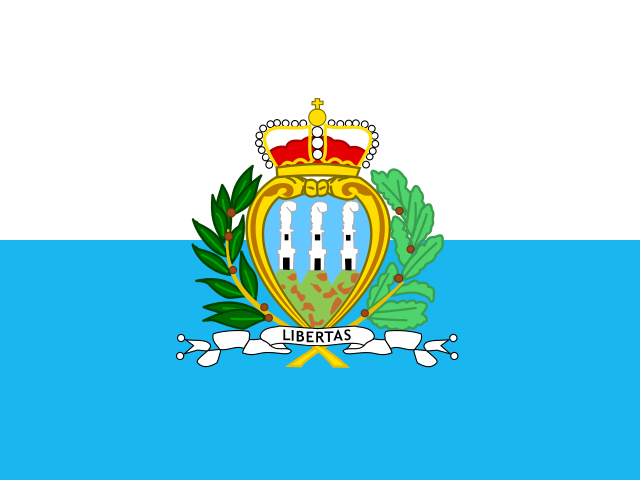
San Marino MicrostateUS exposure 0% · national 0% · 5 bodies| Body | Type | Website | Mail domain · how established | Mail provider | Jurisdiction |
|---|---|---|---|---|---|
| Fortress Guard Guardia di Rocca | Border / coast guard | www.guardiadirocca.sm | guardiadirocca.smofficial site | Not determinable | Unknown |
| Secretariat of State for Foreign Affairs Segreteria di Stato per gli Affari Esteri | Defence ministry | www.esteri.sm | gov.smofficial site | Not determinable | Unknown |
| Gendarmerie Corps of the Republic of San Marino Corpo della Gendarmeria della Repubblica di San Marino | Gendarmerie | www.gendarmeria.sm | gendarmeria.sminferred from website | Not determinable | Unknown |
| Secretariat of State for Internal Affairs Segreteria di Stato per gli Affari Interni | Interior ministry | www.interni.sm | gov.smofficial site | Not determinable | Unknown |
| Civil Police Corps Corpo di Polizia Civile | Police | www.poliziacivile.sm | poliziacivile.smofficial site | Not determinable | Unknown |
Serbia Candidate / neighbourUS exposure 0% · national 100% · 11 bodies
| Body | Type | Website | Mail domain · how established | Mail provider | Jurisdiction |
|---|---|---|---|---|---|
| Serbian Armed Forces (VS) Војска Србије | Armed forces / general staff | www.vs.rs | vs.rsofficial site | National ISP | National |
| Border Police Directorate (UGP) Uprava granične policije | Border / coast guard | www.mup.gov.rs | mup.gov.rsinferred from website | National ISP | National |
| National CERT of the Republic of Serbia (SRB-CERT) Nacionalni CERT Republike Srbije | Cybersecurity | www.cert.rs | cert.rsofficial document | National ISP | National |
| Ministry of Defence of the Republic of Serbia (MO) Ministarstvo odbrane Republike Srbije | Defence ministry | www.mod.gov.rs | mod.gov.rsofficial site | National ISP | National |
| Gendarmery Žandarmerija | Gendarmerie | www.mup.gov.rs | mup.gov.rsinferred from website | National ISP | National |
| Military Intelligence Agency (VOA) Vojnoobaveštajna agencija | Intelligence | www.voa.mod.gov.rs | voa.mod.gov.rsofficial site | National ISP | National |
| Military Security Agency (VBA) Vojnobezbednosna agencija | Intelligence | www.vba.mod.gov.rs | vba.mod.gov.rsinferred from website | Not determinable | Unknown |
| Security Information Agency (BIA) Bezbednosno-informativna agencija | Intelligence | www.bia.gov.rs | bia.gov.rsofficial site | National ISP | National |
| Ministry of Internal Affairs of the Republic of Serbia (MUP) Ministarstvo unutrašnjih poslova Republike Srbije | Interior ministry | www.mup.gov.rs | mup.gov.rsofficial site | National ISP | National |
| Serbian Radiation and Nuclear Safety and Security Directorate (SRBATOM) Директорат за радијациону и нуклеарну сигурност и безбедност Србије | Other national security | www.srbatom.gov.rs | srbatom.gov.rsofficial site | Self-hosted | National |
| Police Directorate (General Police Directorate) Direkcija policije | Police | www.mup.gov.rs | mup.gov.rsofficial site | National ISP | National |
Slovakia EU member stateUS exposure 0% · national 100% · 8 bodies
| Body | Type | Website | Mail domain · how established | Mail provider | Jurisdiction |
|---|---|---|---|---|---|
| National Cyber Security Centre SK-CERT (SK-CERT) Národné centrum kybernetickej bezpečnosti SK-CERT | Cybersecurity | www.sk-cert.sk | nbu.gov.skAI cross-check | Self-hosted | National |
| National Security Authority (NBÚ) Národný bezpečnostný úrad | Cybersecurity | www.nbu.gov.sk | nbu.gov.skofficial site | Self-hosted | National |
| Ministry of Defence of the Slovak Republic (MO SR) Ministerstvo obrany Slovenskej republiky | Defence ministry | www.mosr.sk | mod.gov.skofficial document | Self-hosted | National |
| Military Intelligence (VS) Vojenské spravodajstvo | Intelligence | vs.mosr.sk | vs.mil.skinferred from website | National ISP | National |
| Slovak Information Service (SIS) Slovenská informačná služba | Intelligence | www.sis.gov.sk | sis.gov.skAI cross-check | Self-hosted | National |
| Ministry of the Interior of the Slovak Republic (MV SR) Ministerstvo vnútra Slovenskej republiky | Interior ministry | www.minv.sk | minv.skofficial document | National ISP | National |
| Nuclear Regulatory Authority (ÚJD SR) Úrad jadrového dozoru SR | Other national security | www.ujd.gov.sk | ujd.gov.skofficial site | Self-hosted | National |
| Police Force (Presidium of the Police Force) (PZ) Policajný zbor (Prezídium Policajného zboru) | Police | www.minv.sk/?policia | minv.skofficial document | National ISP | National |
Slovenia EU member stateUS exposure 50% · national 50% · 8 bodies
| Body | Type | Website | Mail domain · how established | Mail provider | Jurisdiction |
|---|---|---|---|---|---|
| Government Information Security Office of the Republic of Slovenia (URSIV) Urad Vlade Republike Slovenije za informacijsko varnost | Cybersecurity | www.gov.si/drzavni-organi/vladne-sluzbe/urad-vlade-za-informacijsko-varnost | gov.siofficial document | Microsoft 365 | US provider (CLOUD Act) |
| SI-CERT, Slovenian Computer Emergency Response Team (SI-CERT) SI-CERT (Slovenski center za posredovanje pri omrežnih incidentih) | Cybersecurity | www.cert.si | cert.siofficial site | Self-hosted | National |
| Ministry of Defence (MO / MORS) Ministrstvo za obrambo | Defence ministry | www.gov.si/drzavni-organi/ministrstva/ministrstvo-za-obrambo | mors.siofficial site | Self-hosted | National |
| Intelligence and Security Service of the Ministry of Defence (OVS) Obveščevalno varnostna služba Ministrstva za obrambo | Intelligence | www.gov.si/drzavni-organi/ministrstva/ministrstvo-za-obrambo/o-ministrstvu/obvescevalno-varnostna-sluzba | mors.siofficial document | Self-hosted | National |
| Slovenian Intelligence and Security Agency (SOVA) Slovenska obveščevalno-varnostna agencija | Intelligence | www.gov.si/drzavni-organi/vladne-sluzbe/slovenska-obvescevalno-varnostna-agencija | gov.siofficial site | Microsoft 365 | US provider (CLOUD Act) |
| Ministry of the Interior (MNZ) Ministrstvo za notranje zadeve | Interior ministry | www.gov.si/drzavni-organi/ministrstva/ministrstvo-za-notranje-zadeve | gov.siofficial site | Microsoft 365 | US provider (CLOUD Act) |
| Government Office for the Protection of Classified Information (National Security Authority) (UVTP) Urad Vlade Republike Slovenije za varovanje tajnih podatkov | Other national security | www.gov.si/drzavni-organi/vladne-sluzbe/urad-vlade-za-varovanje-tajnih-podatkov | gov.siofficial site | Microsoft 365 | US provider (CLOUD Act) |
| Slovenian National Police Policija | Police | www.policija.si | policija.siofficial site | Self-hosted | National |
Spain EU member stateUS exposure 8% · national 92% · 15 bodies
| Body | Type | Website | Mail domain · how established | Mail provider | Jurisdiction |
|---|---|---|---|---|---|
| Defence Staff (EMAD) Estado Mayor de la Defensa (incl. UME) | Armed forces / general staff | emad.defensa.gob.es | oc.mde.esofficial document | Self-hosted | National |
| Spanish Air and Space Force (EA) Ejército del Aire y del Espacio | Armed forces / general staff | ejercitodelaireydelespacio.defensa.gob.es | ea.mde.esofficial document | Self-hosted | National |
| Spanish Army (ET) Ejército de Tierra | Armed forces / general staff | ejercito.defensa.gob.es | et.mde.esofficial document | Self-hosted | National |
| Spanish Navy Armada Española | Armed forces / general staff | armada.defensa.gob.es | fn.mde.esofficial document | Self-hosted | National |
| Spanish Maritime Safety and Rescue Agency (SASEMAR) Sociedad de Salvamento y Seguridad Marítima | Border / coast guard | www.salvamentomaritimo.es | sasemar.esofficial document | Microsoft 365 | US provider (CLOUD Act) |
| National Cryptologic Centre / Governmental CERT (CCN) Centro Criptológico Nacional / CCN-CERT | Cybersecurity | www.ccn-cert.cni.es | ccn.cni.esofficial site | National ISP | National |
| National Cybersecurity Institute (INCIBE) Instituto Nacional de Ciberseguridad | Cybersecurity | www.incibe.es | incibe.esAI cross-check | National ISP | National |
| Ministry of Defence (MDE) Ministerio de Defensa | Defence ministry | www.defensa.gob.es | mde.esofficial site | Self-hosted | National |
| Civil Guard (GC) Guardia Civil | Gendarmerie | www.guardiacivil.es | guardiacivil.orgofficial document | National ISP | National |
| National Intelligence Centre (CNI) Centro Nacional de Inteligencia | Intelligence | www.cni.es | cni.esofficial site | National ISP | National |
| Ministry of the Interior (MIR) Ministerio del Interior | Interior ministry | www.interior.gob.es | interior.gob.esinferred from website | Not determinable | Unknown |
| National Security Authority (classified information) (ONS) Oficina Nacional de Seguridad (CNI) | Other national security | www.cni.es | ons.cni.esofficial document | National ISP | National |
| National Security Department (Presidency of the Government) (DSN) Departamento de Seguridad Nacional | Other national security | www.dsn.gob.es | dsn.presidencia.gob.esAI cross-check | National ISP | National |
| Nuclear Safety Council (CSN) Consejo de Seguridad Nuclear | Other national security | www.csn.es | csn.esofficial site | Not determinable | Unknown |
| National Police Corps (CNP) Policía Nacional (Cuerpo Nacional de Policía) | Police | www.policia.es | policia.esofficial site | Not determinable | Unknown |
Sweden EU member stateUS exposure 0% · national 100% · 11 bodies
| Body | Type | Website | Mail domain · how established | Mail provider | Jurisdiction |
|---|---|---|---|---|---|
| Swedish Coast Guard (KBV) Kustbevakningen | Border / coast guard | www.kustbevakningen.se | kustbevakningen.seofficial site | National ISP | National |
| National CSIRT of Sweden (CERT-SE) (CERT-SE) CERT-SE | Cybersecurity | www.cert.se | cert.seofficial site | Self-hosted | National |
| Ministry of Defence (Fö) Försvarsdepartementet | Defence ministry | www.regeringen.se/regeringens-politik/forsvarsdepartementet | regeringskansliet.seofficial document | Self-hosted | National |
| Military Intelligence and Security Service (Swedish Armed Forces) (MUST) Militära underrättelse- och säkerhetstjänsten (Försvarsmakten) | Intelligence | www.forsvarsmakten.se | mil.seofficial site | Self-hosted | National |
| National Defence Radio Establishment (FRA) Försvarets radioanstalt | Intelligence | www.fra.se | fra.seofficial document | National ISP | National |
| Swedish Security Service (Säpo) Säkerhetspolisen | Intelligence | sakerhetspolisen.se | sakerhetspolisen.seofficial document | National ISP | National |
| Ministry of Justice (Ju) Justitiedepartementet | Interior ministry | www.regeringen.se/regeringens-politik/justitiedepartementet | regeringskansliet.seofficial site | Self-hosted | National |
| Swedish Agency for Civil Defence (formerly MSB, Swedish Civil Contingencies Agency) (MCF) Myndigheten för civilt försvar | Other national security | www.mcf.se | mcf.seofficial document | National ISP | National |
| Swedish Defence Materiel Administration (FMV) Försvarets materielverk | Other national security | www.fmv.se | fmv.seofficial site | Self-hosted | National |
| Swedish Radiation Safety Authority (SSM) Strålsäkerhetsmyndigheten | Other national security | www.stralsakerhetsmyndigheten.se | ssm.seofficial document | Self-hosted | National |
| Swedish Police Authority Polismyndigheten | Police | polisen.se | polisen.seofficial site | Self-hosted | National |
Switzerland EFTAUS exposure 0% · national 100% · 10 bodies
| Body | Type | Website | Mail domain · how established | Mail provider | Jurisdiction |
|---|---|---|---|---|---|
| Federal Office for Customs and Border Security (BAZG / FOCBS) Bundesamt für Zoll und Grenzsicherheit | Border / coast guard | www.bazg.admin.ch | bazg.admin.chofficial site | Self-hosted | National |
| Federal Office for Cybersecurity (BACS / NCSC) Bundesamt für Cybersicherheit | Cybersecurity | www.bacs.admin.ch | ncsc.admin.chofficial site | Self-hosted | National |
| Federal Department of Defence, Civil Protection and Sport (VBS / DDPS) Eidgenössisches Departement für Verteidigung, Bevölkerungsschutz und Sport | Defence ministry | www.vbs.admin.ch | gs-vbs.admin.chofficial site | Self-hosted | National |
| Federal Intelligence Service (NDB / FIS) Nachrichtendienst des Bundes | Intelligence | www.vbs.admin.ch/de/sicherheit/nachrichtendienst-bund | ndb.admin.chofficial document | Self-hosted | National |
| Military Intelligence Service (MND) Militärischer Nachrichtendienst | Intelligence | www.vtg.admin.ch | vtg.admin.chinferred from website | Self-hosted | National |
| Federal Department of Justice and Police (EJPD / FDJP) Eidgenössisches Justiz- und Polizeidepartement | Interior ministry | www.ejpd.admin.ch | gs-ejpd.admin.chAI cross-check | Self-hosted | National |
| Federal Office for Civil Protection (BABS) Bundesamt für Bevölkerungsschutz | Other national security | www.babs.admin.ch | babs.admin.chofficial document | Self-hosted | National |
| Federal Office for Defence Procurement armasuisse (armasuisse) Bundesamt für Rüstung armasuisse | Other national security | www.ar.admin.ch | ar.admin.chofficial site | Self-hosted | National |
| Swiss Federal Nuclear Safety Inspectorate (ENSI) Eidgenössisches Nuklearsicherheitsinspektorat | Other national security | www.ensi.ch | ensi.chofficial site | Self-hosted | National |
| Federal Office of Police (fedpol) Bundesamt für Polizei | Police | www.fedpol.admin.ch | fedpol.admin.chofficial site | Self-hosted | National |
Turkey Candidate / neighbourUS exposure 0% · national 100% · 11 bodies
| Body | Type | Website | Mail domain · how established | Mail provider | Jurisdiction |
|---|---|---|---|---|---|
| Coast Guard Command (SGK) Sahil Güvenlik Komutanlığı | Border / coast guard | www.sg.gov.tr | sg.gov.trinferred from website | Self-hosted | National |
| Digital Transformation Office of the Presidency (CBDDO) Cumhurbaşkanlığı Dijital Dönüşüm Ofisi | Cybersecurity | cbddo.gov.tr | cbddo.gov.trinferred from website | Self-hosted | National |
| Information and Communication Technologies Authority (BTK) Bilgi Teknolojileri ve İletişim Kurumu | Cybersecurity | www.btk.gov.tr | btk.gov.trofficial site | Self-hosted | National |
| National Cyber Incident Response Center (TR-CERT) (USOM / TR-CERT) Ulusal Siber Olaylara Müdahale Merkezi | Cybersecurity | www.usom.gov.tr | usom.gov.trofficial site | Self-hosted | National |
| Ministry of National Defence of the Republic of Turkey (MSB) Türkiye Cumhuriyeti Millî Savunma Bakanlığı | Defence ministry | www.msb.gov.tr | msb.gov.trinferred from website | Self-hosted | National |
| Gendarmerie General Command (JGK) Jandarma Genel Komutanlığı | Gendarmerie | www.jandarma.gov.tr | jandarma.gov.trinferred from website | Self-hosted | National |
| National Intelligence Organization (MİT) Millî İstihbarat Teşkilâtı | Intelligence | www.mit.gov.tr | mit.gov.trinferred from website | Self-hosted | National |
| Ministry of Interior of the Republic of Turkey Türkiye Cumhuriyeti İçişleri Bakanlığı | Interior ministry | www.icisleri.gov.tr | icisleri.gov.trinferred from website | National ISP | National |
| Disaster and Emergency Management Authority (AFAD) Afet ve Acil Durum Yönetimi Başkanlığı | Other national security | www.afad.gov.tr | afad.gov.trofficial site | Self-hosted | National |
| Secretariat-General of the National Security Council (MGK) Millî Güvenlik Kurulu Genel Sekreterliği | Other national security | www.mgk.gov.tr | mgk.gov.trinferred from website | Self-hosted | National |
| General Directorate of Security (Turkish National Police) (EGM) Emniyet Genel Müdürlüğü | Police | www.egm.gov.tr | egm.gov.trinferred from website | Self-hosted | National |
Ukraine Candidate / neighbourUS exposure 29% · national 71% · 14 bodies
| Body | Type | Website | Mail domain · how established | Mail provider | Jurisdiction |
|---|---|---|---|---|---|
| State Border Guard Service of Ukraine (DPSU) Державна прикордонна служба України | Border / coast guard | dpsu.gov.ua | dpsu.gov.uaofficial site | Self-hosted | National |
| State Customs Service of Ukraine (DMS) Державна митна служба України | Border / coast guard | customs.gov.ua | customs.gov.uaofficial site | Self-hosted | National |
| Computer Emergency Response Team of Ukraine (CERT-UA) Урядова команда реагування на комп'ютерні надзвичайні події України CERT-UA | Cybersecurity | cert.gov.ua | cert.gov.uaofficial site | Microsoft 365 | US provider (CLOUD Act) |
| State Service of Special Communications and Information Protection of Ukraine (SSSCIP) Державна служба спеціального зв'язку та захисту інформації України | Cybersecurity | cip.gov.ua | cip.gov.uaofficial site | Self-hosted | National |
| Ministry of Defence of Ukraine (MOU) Міністерство оборони України | Defence ministry | mod.gov.ua | mod.gov.uaofficial site | Microsoft 365 | US provider (CLOUD Act) |
| National Guard of Ukraine (NGU) Національна гвардія України | Gendarmerie | ngu.gov.ua | ngu.gov.uainferred from website | Self-hosted | National |
| Foreign Intelligence Service of Ukraine (SZRU) Служба зовнішньої розвідки України | Intelligence | szru.gov.ua | szru.gov.uaofficial site | Self-hosted | National |
| Main Directorate of Intelligence of the Ministry of Defence of Ukraine (HUR (GUR)) Головне управління розвідки Міністерства оборони України | Intelligence | gur.gov.ua | gur.gov.uainferred from website | Self-hosted | National |
| Security Service of Ukraine (SBU) Служба безпеки України | Intelligence | ssu.gov.ua | ssu.gov.uaofficial site | Self-hosted | National |
| Ministry of Internal Affairs of Ukraine (MVS) Міністерство внутрішніх справ України | Interior ministry | mvs.gov.ua | mvs.gov.uaofficial site | Microsoft 365 | US provider (CLOUD Act) |
| National Security and Defence Council of Ukraine (NSDC (RNBO)) Рада національної безпеки і оборони України | Other national security | www.rnbo.gov.ua | rnbo.gov.uainferred from website | Self-hosted | National |
| State Emergency Service of Ukraine (DSNS) Державна служба України з надзвичайних ситуацій | Other national security | dsns.gov.ua | dsns.gov.uaofficial document | Google Workspace | US provider (CLOUD Act) |
| State Nuclear Regulatory Inspectorate of Ukraine (SNRIU) Державна інспекція ядерного регулювання України | Other national security | snriu.gov.ua | snriu.gov.uaofficial site | Self-hosted | National |
| National Police of Ukraine (NPU) Національна поліція України | Police | www.npu.gov.ua | police.gov.uaofficial document | Self-hosted | National |
United Kingdom United KingdomUS exposure 89% · national 11% · 18 bodies
| Body | Type | Website | Mail domain · how established | Mail provider | Jurisdiction |
|---|---|---|---|---|---|
| Border Force (BF) Border Force | Border / coast guard | www.gov.uk/government/organisations/border-force | homeoffice.gov.ukofficial site | Amazon (AWS) | US provider (CLOUD Act) |
| Maritime and Coastguard Agency (HM Coastguard) (MCA) Maritime and Coastguard Agency | Border / coast guard | www.gov.uk/government/organisations/maritime-and-coastguard-agency | mcga.gov.ukofficial site | Microsoft 365 | US provider (CLOUD Act) |
| National Cyber Security Centre (NCSC) National Cyber Security Centre | Cybersecurity | www.ncsc.gov.uk | ncsc.gov.ukofficial site | Microsoft 365 | US provider (CLOUD Act) |
| Ministry of Defence (MOD) Ministry of Defence | Defence ministry | www.gov.uk/government/organisations/ministry-of-defence | mod.gov.ukofficial site | Microsoft 365 | US provider (CLOUD Act) |
| Defence Intelligence (DI) Defence Intelligence | Intelligence | www.gov.uk/government/groups/defence-intelligence | mod.gov.ukofficial site | Microsoft 365 | US provider (CLOUD Act) |
| Government Communications Headquarters (GCHQ) Government Communications Headquarters | Intelligence | www.gchq.gov.uk | gchq.gov.ukofficial site | Microsoft 365 | US provider (CLOUD Act) |
| Secret Intelligence Service (SIS) Secret Intelligence Service (MI6) | Intelligence | www.sis.gov.uk | sis.gov.ukinferred from website | Microsoft 365 | US provider (CLOUD Act) |
| Security Service (MI5) Security Service (MI5) | Intelligence | www.mi5.gov.uk | mi5.gov.ukinferred from website | Microsoft 365 | US provider (CLOUD Act) |
| Home Office (HO) Home Office | Interior ministry | www.gov.uk/government/organisations/home-office | homeoffice.gov.ukofficial site | Amazon (AWS) | US provider (CLOUD Act) |
| Atomic Weapons Establishment (AWE) AWE plc (Atomic Weapons Establishment) | Other national security | www.awe.co.uk | awe.co.ukofficial site | Microsoft 365 | US provider (CLOUD Act) |
| Civil Nuclear Constabulary (CNC) Civil Nuclear Constabulary | Other national security | www.gov.uk/government/organisations/civil-nuclear-constabulary | cnc.police.ukofficial document | Microsoft 365 | US provider (CLOUD Act) |
| Defence Science and Technology Laboratory (Dstl) Defence Science and Technology Laboratory | Other national security | www.gov.uk/government/organisations/defence-science-and-technology-laboratory | dstl.gov.ukofficial site | Self-hosted | National |
| Office for Nuclear Regulation (ONR) Office for Nuclear Regulation | Other national security | www.onr.org.uk | onr.gov.ukofficial site | Microsoft 365 | US provider (CLOUD Act) |
| UK Hydrographic Office (UKHO) UK Hydrographic Office | Other national security | www.gov.uk/government/organisations/uk-hydrographic-office | ukho.gov.ukofficial site | Microsoft 365 | US provider (CLOUD Act) |
| Metropolitan Police Service (MPS) Metropolitan Police Service | Police | www.met.police.uk | met.police.ukofficial site | Microsoft 365 | US provider (CLOUD Act) |
| National Crime Agency (NCA) National Crime Agency | Police | www.nationalcrimeagency.gov.uk | nca.gov.ukofficial site | Microsoft 365 | US provider (CLOUD Act) |
| Police Service of Northern Ireland (PSNI) Police Service of Northern Ireland / Seirbhís Póilíneachta Thuaisceart Éireann | Police | www.psni.police.uk | psni.police.ukAI cross-check | National ISP | National |
| Police Service of Scotland (PS) Police Scotland / Poileas Alba | Police | www.scotland.police.uk | scotland.police.ukofficial site | Microsoft 365 | US provider (CLOUD Act) |
Vatican City MicrostateUS exposure 0% · national 67% · 3 bodies
| Body | Type | Website | Mail domain · how established | Mail provider | Jurisdiction |
|---|---|---|---|---|---|
| Gendarmerie Corps of Vatican City State Corpo della Gendarmeria dello Stato della Città del Vaticano | Gendarmerie | www.vaticanstate.va | scv.vaofficial site | Self-hosted | National |
| Governorate of Vatican City State Governatorato dello Stato della Città del Vaticano | Interior ministry | www.vaticanstate.va | scv.vaofficial site | Self-hosted | National |
| Pontifical Swiss Guard (GSP) Pontificia Cohors Helvetica / Guardia Svizzera Pontificia | Other national security | www.guardiasvizzera.ch | guardiasvizzera.chinferred from website | Self-hosted | Other European |
Annex — non-aligned states
 Russia AnnexUS exposure 0% · national 100% · 13 bodies
Russia AnnexUS exposure 0% · national 100% · 13 bodies
| Body | Type | Website | Mail domain · how established | Mail provider | Jurisdiction |
|---|---|---|---|---|---|
| Border Guard Service of the FSB of Russia (PS FSB) Пограничная служба ФСБ России | Border / coast guard | ps.fsb.ru | fsb.ruinferred from website | Self-hosted | National |
| Federal Customs Service (FTS) Федеральная таможенная служба | Border / coast guard | customs.gov.ru | customs.ruofficial site | Self-hosted | National |
| Federal Service for Technical and Export Control (FSTEC) Федеральная служба по техническому и экспортному контролю | Cybersecurity | fstec.ru | fstec.ruinferred from website | Self-hosted | National |
| National Coordination Center for Computer Incidents (NKTsKI) Национальный координационный центр по компьютерным инцидентам | Cybersecurity | cert.gov.ru | cert.gov.ruofficial site | Self-hosted | National |
| Ministry of Defence of the Russian Federation (MO RF) Министерство обороны Российской Федерации | Defence ministry | mil.ru | mil.ruinferred from website | Self-hosted | National |
| Federal Service of the National Guard Troops of the Russian Federation (Rosgvardiya) (FSVNG) Федеральная служба войск национальной гвардии Российской Федерации (Росгвардия) | Gendarmerie | rosguard.gov.ru | rosguard.gov.ruofficial site | Self-hosted | National |
| Federal Security Service of the Russian Federation (FSB) Федеральная служба безопасности Российской Федерации | Intelligence | www.fsb.ru | fsb.ruinferred from website | Self-hosted | National |
| Foreign Intelligence Service of the Russian Federation (SVR) Служба внешней разведки Российской Федерации | Intelligence | svr.gov.ru | svr.gov.ruinferred from website | Not determinable | Unknown |
| Ministry of Internal Affairs of the Russian Federation (MVD) Министерство внутренних дел Российской Федерации | Interior ministry | mvd.ru | mvd.ruinferred from website | Self-hosted | National |
| EMERCOM of Russia (MChS) МЧС России | Other national security | mchs.gov.ru | mchs.gov.ruofficial site | Self-hosted | National |
| Federal Service for Environmental, Technological and Nuclear Supervision (RTN) Ростехнадзор | Other national security | www.gosnadzor.ru | gosnadzor.ruofficial site | Self-hosted | National |
| Office of the Security Council of the Russian Federation (SB RF) Аппарат Совета Безопасности Российской Федерации | Other national security | www.scrf.gov.ru | scrf.gov.ruinferred from website | Not determinable | Unknown |
| Police of Russia (service of the MVD) Полиция России (в составе МВД России) | Police | мвд.рф | mvd.ruinferred from website | Self-hosted | National |
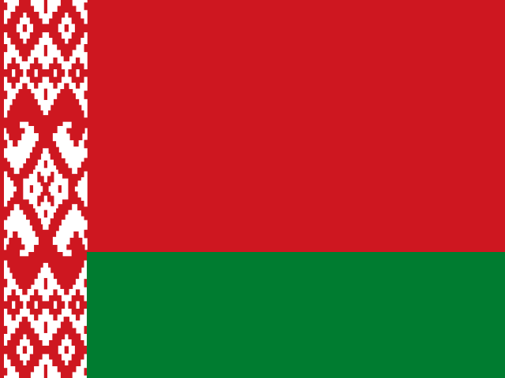
Belarus AnnexUS exposure 0% · national 100% · 10 bodies| Body | Type | Website | Mail domain · how established | Mail provider | Jurisdiction |
|---|---|---|---|---|---|
| State Border Committee of the Republic of Belarus (GPK) Государственный пограничный комитет Республики Беларусь | Border / coast guard | gpk.gov.by | gpk.gov.byinferred from website | National ISP | National |
| National Computer Emergency Response Team of Belarus (CERT.BY) (CERT.BY) CERT.BY — Национальный центр реагирования на компьютерные инциденты | Cybersecurity | cert.by | cert.byAI cross-check | National ISP | National |
| Operations and Analysis Center under the President of the Republic of Belarus (OAC) Оперативно-аналитический центр при Президенте Республики Беларусь | Cybersecurity | oac.gov.by | oac.gov.byinferred from website | National ISP | National |
| Ministry of Defence of the Republic of Belarus (MO RB) Министерство обороны Республики Беларусь | Defence ministry | www.mil.by | mod.mil.byofficial site | National ISP | National |
| Internal Troops of the MVD of the Republic of Belarus (VV MVD) Внутренние войска МВД Республики Беларусь | Gendarmerie | www.mvd.gov.by | mvd.gov.byinferred from website | National ISP | National |
| State Security Committee of the Republic of Belarus (KGB) Комитет государственной безопасности Республики Беларусь | Intelligence | www.kgb.by | kgb.byinferred from website | National ISP | National |
| Ministry of Internal Affairs of the Republic of Belarus (MVD) Министерство внутренних дел Республики Беларусь | Interior ministry | www.mvd.gov.by | mvd.gov.byinferred from website | National ISP | National |
| Ministry of Emergency Situations (MChS) Министерство по чрезвычайным ситуациям | Other national security | mchs.gov.by | mchs.gov.byinferred from website | National ISP | National |
| State Secretariat of the Security Council of the Republic of Belarus Государственный секретариат Совета Безопасности Республики Беларусь | Other national security | www.sovbez.gov.by | sovbez.gov.byinferred from website | Not determinable | Unknown |
| Militia of the Republic of Belarus (police, part of the MVD) Милиция Республики Беларусь (в составе МВД) | Police | www.mvd.gov.by | mvd.gov.byinferred from website | National ISP | National |